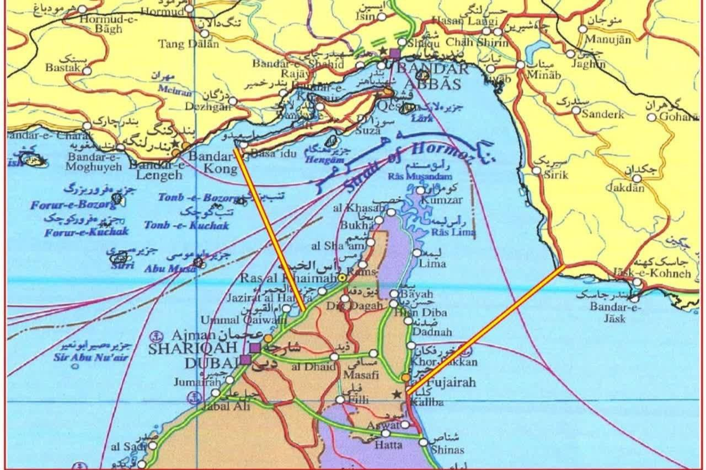

Chokepoint Geopolitics Research · Paper II | Paper I: The Tungsten Clock
Iran's Coupled Maritime Doctrine at Hormuz and Bab el-Mandeb as a Form of Governance
Working Paper — This paper is circulated for discussion and comment. It represents the author's analysis as of 9 August 2026 based on open-source reporting, primary documents, and independent research. It has not undergone formal peer review. Claims are sourced and tiered according to the evidence taxonomy below. The paper will be updated as events develop. Comments and corrections are welcome.
This paper argues that Iran has constructed a coupled maritime denial architecture at the Strait of Hormuz and Bab el-Mandeb that functions as governance rather than warfare. The Strait is not being blockaded — it is being administered (the paper's central analytical frame, built on a documented operational record that this paper interprets rather than simply describes). The toll is not a ransom — it is a tariff. The IRGC's selective passage regime, codified by Iran's Majlis committee in March 2026 and institutionalized through the Persian Gulf Strait Authority (PGSA) in May 2026, suggests the emergence of chokepoint sovereignty: a form of territorial authority that existing international law, UNCLOS doctrine, and freedom-of-navigation frameworks appear poorly designed to address.
The paper develops the framing of tollbooth as governance architecture and situates it within Farrell and Newman's weaponized interdependence framework — arguing that Iran has inverted the asymmetry, converting a Western coercive instrument into a platform for durable structural leverage. It closes with analysis of the April 8 ceasefire as recognition rather than resolution, and an assessment of what would actually have to change for the architecture to fail.
Core Claims and Evidence
| Claim | Evidence Tier | Section | Would Be Falsified By |
|---|---|---|---|
| IRGC controls the Hormuz corridor; no normal-route transits after March 15 | Confirmed | I [3] | Documented normal-route transits resuming without PGSA clearance |
| Toll payments settled in yuan/crypto | Reported | I, VII [4] [19] | Confirmed dollar-denominated settlement at scale |
| The regime is governance, not extortion with rules | Analyst Inference | V [12a] | Tier structure overridden ad hoc; Oman alternative accepted then blocked; passage determined by unrecorded side payments |
| Hormuz and Bab el-Mandeb form a multiplicative, not additive, coupled system | Analyst Inference | IV [10] | Disruption at one chokepoint shown to have no measurable effect on the other |
| PGSA is an institutionalized authority, not a temporary wartime measure | Confirmed / Reported | X [23] | PGSA dissolved and not replaced by a functionally equivalent successor |
| Sovereignty, not revenue, is the primary Iranian objective | Confirmed / Reported | V, X [12b] [12c] [35] | Iran accepting a revenue-neutral joint-management framework it does not administer alone |
| The architecture survived the ceasefire and the MOU's collapse | Confirmed | IX, X [26a] [28] | PGSA processing halted or corridor reverting to open transit |
Bracketed numbers link to the corresponding footnote. A roadmap, not a substitute for the sourcing in each section's footnotes.
Methodology & Evidence Standards — This paper draws on four source categories, each tagged inline using the evidence taxonomy above. Confirmed claims rest on primary documents, official statements, or corroboration by two or more independent credible outlets (Lloyd's List Intelligence, U.S. Treasury/OFAC press releases, Majlis legislative records, ICJ case text). Reported claims derive from single credible sources — regional or international outlets with established track records on this subject — not yet independently corroborated. Estimated claims use documented data and established methodology (maritime economics, satellite imagery analysis, financial flow reporting). Analyst Inference marks the author's interpretive judgments, clearly distinguished from empirical claims throughout. One source (diplomatic contact, March 2026) is anonymized at the contact's request; the substance of that communication bears on legal interpretation, not operational facts, and is tagged Reported accordingly. Readers are encouraged to follow footnote links directly to primary sources where available.
There is a sentence that changed the architecture of global trade, and it was delivered not by a president or a general but by a foreign minister standing before cameras in Tehran. Abbas Araghchi, Iran's Foreign Minister, declared that the Strait of Hormuz is not international waters — it is internal to Iran and Oman.[1] Confirmed A diplomatic contact with direct knowledge of the relevant legal frameworks confirmed to this author that the reading was substantively defensible under UNCLOS Article 45 combined with the bilateral Iran-Oman governance arrangement.[2] What Araghchi announced was not a threat. It was a property claim.
The Western response was to call it a provocation and wait for it to pass. It did not pass. From March 13, 2026, all vessel transits through the Strait followed a single IRGC-controlled corridor. Lloyd's List Intelligence confirmed that no transits via the normal route were tracked after March 15, with more than 20 vessels documented taking the so-called "Tehran Toll Booth" route — an IRGC-dictated detour through Iranian territorial waters around Larak Island — and at least two reportedly paying for safe passage, with fees settled in yuan.[3] Confirmed Reported Bloomberg reported the operational mechanics in detail: a tiered nation-ranking system, toll schedules denominated in yuan and digital currencies, and IRGC escort vessels enforcing the architecture at the corridor's mouth.[4] Reported Iran's Majlis National Security Commission approved the "Strait of Hormuz Management Plan" bill on March 30–31, 2026, advancing it to a full parliamentary vote.[5] Confirmed
This paper reconstructs the construction of an economic denial regime at the world's most consequential maritime chokepoint — assembled incrementally, in public, across six years of documented capability development. Not a blockade. Not an act of war. A toll road.
The 2019 seizure of the British-flagged Stena Impero was interpreted at the time as a retaliatory tantrum — Iran's tit-for-tat response to the British impoundment of its tanker Grace 1 off Gibraltar. The interpretation was convenient, and its convenience was diagnostic. The seizure may have been retaliatory in motivation; it was demonstrative in effect.[6] Analyst Inference
Iran demonstrated three verifiable things in that seizure: first, that it could board and redirect a commercial vessel at the Strait on minimal notice; second, that the international maritime community would respond with legal protests rather than military intervention; and third, that the costs (diplomatic censure, targeted sanctions) were manageable. Whether or not Tehran planned the seizure as a capability test, the operational lessons it yielded were legible. The subsequent pattern supports the inference that they were absorbed: the 2021 IRGC seizure of the Asphalt Princess off Oman, the 2023 boarding of the Advantage Sweet under helicopter insertion, and the steady expansion of IRGC corridor-enforcement training documented in open-source satellite imagery collectively describe a program of incremental capability refinement, not episodic opportunism.[7] Reported
What followed across the next six years was a systematic refinement of that capability: development of IRGC maritime interdiction units, construction of the legal doctrine supporting Araghchi's territorial claim, cultivation of the Iran-Oman bilateral governance framework, and the integration of Houthi maritime operations in the Red Sea as a geographically distributed extension of the same denial logic. By the time Operation Epic Fury commenced in late February 2026, the architecture was complete. Western intelligence simply had not been watching it being built.[7] Analyst Inference
The standard Western estimate of Iranian precision-strike capacity placed effective range at approximately 300 kilometers, with meaningful accuracy degrading sharply beyond that threshold.[8] Reported This estimate informed targeting doctrine, fleet positioning, and the operational confidence characterizing the early phases of Operation Epic Fury. It was wrong by a margin whose classified dimensions became visible in satellite imagery within the first week of the conflict.[9] Estimated
The Shahed-136 loitering munitions deployed in Ukraine had demonstrated Iranian guidance systems operating at extended ranges with dramatically improved precision — a publicly documented capability transfer that Western naval intelligence had apparently treated as theater-specific rather than indicative of the broader arsenal.[8b] Reported The result: U.S. and Israeli naval assets were positioned within strike envelopes that official doctrine had declared safe.
This time, papers and signatures are not guarantees. The objective guarantee for preserving any agreement is the Strait of Hormuz. Geography does not lie, and it is the final judge of treaties written on paper.
— Ali Akbar Velayati, senior adviser to the Leader of the Islamic Revolution, on Iran's post-ceasefire negotiating posture, May 27, 2026[8a] ConfirmedThe epistemic failure was not merely analytical; it was structural. The intelligence community that had spent two decades assessing Iran through the prism of nuclear nonproliferation had systematically under-resourced the assessment of conventional maritime and precision-strike development. Satellite imagery of Qeshm Island naval facilities — confirming IRGC-Navy shipyard expansion, catamaran missile corvette construction, and the development of underground missile storage infrastructure — was available to open-source analysts from commercial providers including Planet Labs and Sentinel-2 throughout the 2020–2025 period.[8c] Reported Publicly available documentation of Fateh-110 family upgrades — from the baseline 300km-range Fateh-110/III through the Zolfaghar (documented range 700km) and Kheibar Shekan (documented range 1,450km) variants — had established a clear capability trajectory that classified assessments, anchored to an earlier period of Iranian development, had failed to update.[8d] Reported The architecture of denial was built in public. The failure to see it was a failure of analytical imagination, not information access.
The standard treatment of Iran's maritime strategy addressed Hormuz and Houthi operations at Bab el-Mandeb as parallel phenomena: two pressure points applied simultaneously. This framing is analytically misleading and strategically consequential in its error.
Hormuz and Bab el-Mandeb do not add. They multiply.
A cargo vessel transiting from the Persian Gulf to European or North American markets must pass through both chokepoints. Closure or toll-imposition at Hormuz blocks the departure of Gulf hydrocarbons. Closure or interdiction at Bab el-Mandeb prevents vessels that have diverted to the Cape of Good Hope route from returning to normal operations. The two chokepoints form a coupled system in which the resilience of the whole is determined not by the average strength of the components but by the weakest link.[10] Analyst Inference
The arithmetic of "multiplicative, not additive" is worth making concrete, as a simple illustration rather than a modeled forecast. A vessel that must clear two sequential chokepoints faces the combined probability of clearing both, not the average disruption at either one. If each chokepoint independently reduces effective throughput by 20% — a 20% chance a given transit is delayed, rerouted, or priced out — additive intuition suggests a 40% combined effect. The actual combined effect is multiplicative: 80% throughput at the first chokepoint times 80% at the second leaves 64% of vessels clearing both without disruption, a 36% combined effect. At the higher disruption levels the Strait has now seen — Hormuz throughput fell 48.8% between July 5 and July 19, and Bab el-Mandeb crude loadings fell roughly 58% between June 29 and July 20 — two independent 50% throughput reductions would combine to a 75% reduction in vessels clearing both legs of the route, not 100%, but the compounding accelerates as either chokepoint's disruption deepens. This is illustrative arithmetic, not a fitted model of the actual traffic and pricing data; it is offered to show why "multiplies rather than adds" is not merely a rhetorical claim but a specific, testable relationship between two disruption rates. Analyst Inference
Standard maritime disruption models treat each chokepoint as an independent constraint — under which simultaneous disruption at two points is more severe but the relationship is additive. The coupled system model produces a different result: when Hormuz controls the exit of Gulf hydrocarbons and Bab el-Mandeb controls the return corridor for the global tanker fleet, the two constraints interact rather than accumulate.
Vessels cannot simply reroute. They face a choice between two corridors, both administered by the same strategic actor operating through different proximate agents: the IRGC at Hormuz; Houthi-administered interdiction at Bab el-Mandeb. The practical effect is not disruption but governance: a single authority with jurisdiction over both exits from the system that powers the global economy.
The integration of Houthi maritime capacity into Iran's denial strategy, documented in IRGC advisory communications reported by multiple regional outlets Reported — represents a deliberate extension of the Hormuz governance model to a geographically separate but strategically coupled point. Iran's ten-point peace framework, circulated in March 2026, explicitly acknowledged both chokepoints as elements of a unified bargaining position.[11] Confirmed What Iran's adversaries had treated as two separate fires to extinguish was, in fact, a single heating system — and Iran held the thermostat.
This paper's central analytical contribution is the concept of tollbooth as governance architecture.
A blockade is an act of war. It is temporary, directed at a specific adversary, and ends when the adversary capitulates or the blocking power withdraws. International law has developed doctrines for governing blockades — from the 1856 Declaration of Paris through the San Remo Manual. The institutions that respond to blockades — the UNSC, naval task forces, diplomatic pressure campaigns — are calibrated for this model.
A toll road is none of these things. It is permanent rather than temporary, and non-discriminatory in form: any vessel may transit, provided the toll is paid. But it is discriminatory in practice — the toll schedule is structured to impose prohibitive costs on adversary-flagged or adversary-destined shipping. It generates revenue rather than merely imposing cost, and it requires negotiation with the governing authority rather than that authority's defeat. Crucially, international legal frameworks have no adequate doctrine for a toll road imposed at a globally critical maritime chokepoint by a state claiming jurisdictional authority.
Elinor Ostrom's work on the governance of commons is normally invoked to explain how communities manage shared resources collectively, without either privatizing them or relying on top-down state coercion — the classic alternative to "tragedy of the commons" enclosure.[11a] The Ostrom inversion is the correct analytical frame for what Iran has done at Hormuz, because it runs that logic in reverse: rather than averting enclosure through collective management, Iran has performed an enclosure of a global commons — converting an international strait into a controlled-access regime — without the formal apparatus of privatization that enclosure normally requires.[11b] Analyst Inference The commons is now a toll road. The question is no longer how to defend freedom of navigation. It is whether to buy a pass.
| Nation Category | Transit Status | Payment Mechanism | Evidence |
|---|---|---|---|
| Iran/Oman bilateral protocol signatories | Free passage | None required | Confirmed |
| "Friendly" states (China, India, Russia, Pakistan) | Tolled passage; bilateral carve-outs emerging | ~$2M/VLCC; yuan, Bitcoin, USDT via PGSA | Confirmed |
| Non-aligned developing states | Conditional tolled passage | Reduced rate; updated list | Estimated |
| Active sanctions states (US, UK, EU, Japan, Korea) | Denied — no fee, no corridor, no passage | N/A | Confirmed |
| Israel-linked vessels | Denied at any price | N/A | Confirmed |
Oil tanker fees are documented at approximately $0.50–$1.00 per barrel of crude cargo — meaning a fully loaded VLCC carrying two million barrels pays approximately $2 million per transit. Confirmed Container ship fees are negotiated individually.[12] The list of "good" and "bad" actors, in the PGSA's own operational practice, is continuously updated. This is not the language of warfare. It is the language of regulation.
The UNSC has procedures for condemning acts of war. It has no procedure for auditing a toll schedule.
Iranian officials have been unusually explicit that revenue is not the point — a claim this paper's governance framing predicts and that is worth taking at face value rather than treating as rhetorical cover. Deputy Foreign Minister Kazem Gharibabadi stated in mid-July that Iran would exercise its sovereignty over the Strait "whatever it costs," and that Tehran had no binding commitments under the Islamabad MOU.[12b] Confirmed The clearest test of this claim came at the end of July, when Oman brought Iran a Gulf-backed counter-proposal explicitly modeled on the Strait of Malacca's cooperative arrangement: joint regional management, an equal division of shipping lanes, and voluntary — not mandatory — fees tied to navigational services rather than a unilateral Iranian toll. A revenue-maximizing actor takes that deal; the fee structure it proposed was not obviously worse for Iran than what Tehran has been collecting ad hoc. Gharibabadi rejected it on state television, specifically objecting to the 50-50 corridor split as failing to address Iran's security concerns, and countered that Iran should control one full shipping lane outright and part of the second — reportedly adding that Tehran would consider "any action," including resumption of the war, to preserve that control.[12c] Reported What was rejected was not a bad financial offer. It was a governance structure in which Iran would be a co-manager rather than the administrator. That is the tell: the toll is downstream of the sovereignty claim, not the other way around.
It is worth being explicit about the inferential step this section has taken, because it is the paper's most contestable move. The documented record establishes that Iran can interdict vessels, impose costs, and extract payment at scale. None of that, by itself, establishes governance — a single actor with overwhelming force can extract tribute without thereby becoming a government.
What converts capability into governance, in this paper's argument, is the presence of rules applied to non-adversaries: a published-in-practice tier structure, a documented application and clearance process, a payment infrastructure built for repeat transactions rather than one-off extraction, and continuity of the system across diplomatic crises rather than a single confrontation. A blockade ends when the blockading power chooses; a toll regime persists because vessels keep choosing to pay it. The PGSA's processing of several hundred non-adversary transit applications is the empirical fact that does the work here: adversary vessels excluded categorically, non-adversary vessels processed administratively, the distinction sustained over months rather than days.
Three claims are embedded in this argument and carry different evidentiary weight. The routing of vessels through the IRGC-controlled Larak Island corridor is Confirmed by Lloyd's List Intelligence and multiple corroborating maritime sources. The payment of fees for passage — at least two vessels documented by Lloyd's List, with yuan settlement — is Reported by a single credible specialist outlet and not yet independently corroborated in full detail. The characterization of this operational pattern as governance rather than episodic coercion is Analyst Inference — this paper's interpretive contribution, built on the documented record rather than equivalent to it. Skeptical readers who accept the first two claims but contest the third are engaging with the paper's actual argument.
The strongest objection to this argument is not that the facts are wrong but that the framing is too generous: that what is being described is extortion conducted with administrative manners, and that duress does not become legitimate merely because it is organized. The U.S. Treasury's own characterization of the PGSA — an IRGC revenue mechanism extorting commercial shipping — is precisely this objection, made by the actor with the strongest interest in rejecting the governance framing.[12a] Confirmed This paper takes that objection seriously and does not dispute its premise. The toll regime may well be extortion under international law, in the sense that the underlying threat — interdiction, mining, attack — is itself unlawful, and payment made under that threat does not retroactively legalize the threat. None of that is in question.
What is in question is a separate matter: whether a system can simultaneously be illegitimate under international law and function, as a matter of observable practice, as the operative governance arrangement for a critical chokepoint. These are not mutually exclusive. Apartheid-era South Africa's control of Walvis Bay — condemned by UN Security Council Resolution 432 (1978) as an attempted annexation inconsistent with Namibian territorial integrity, yet exercised as functional sovereignty over the port and its maritime approaches until 1994 — is the clearest precedent for the distinction between legal status and operational governance.[11c] Confirmed Wartime occupation administrations under the laws of armed conflict provide a second precedent: the Geneva Conventions and Hague Regulations acknowledge the functional authority of an occupying power over territory it controls without thereby conferring legal title — a distinction between the right to govern and the fact of governance that is directly analogous to the argument here.[11d] Confirmed Sanctions-evasion shipping networks offer a third: the architecture through which Russian and Iranian oil cargoes moved during 2022–2025, condemned as violations of multilateral sanctions regimes and documented exhaustively by OFAC and Windward Maritime Intelligence, was nevertheless functionally determinative of how a significant fraction of global oil trade actually moved during that period.[11e] Reported Legal illegitimacy describes the status of a claim; operational governance describes what happens to ships. The policy-relevant question this paper addresses is the second one — because it is the second one that institutions, insurers, and shippers must respond to regardless of how the first is eventually resolved, and because the first being unresolved for years (as Hormuz jurisdiction has been, absent any forum with compulsory jurisdiction over the dispute, per Section VI) does not pause the second. An extortion racket that processes three hundred routine applications a month and excludes adversaries categorically while administering non-adversaries consistently is, descriptively, doing the work of a toll authority — whatever a court would eventually call it, if a court were ever asked.
The precedents above establish that legal illegitimacy and operational governance can coexist. They do not, by themselves, tell a skeptical reader how to distinguish this arrangement from a protection racket wearing a uniform — the more familiar version of the same objection. A criminal organization can extract payment consistently, process applications informally, and persist for years. That does not make it a government. Something more than consistency is required, and this paper's argument rests on four features the Hormuz toll regime has that a protection racket ordinarily does not. First, a published-in-practice tier structure applied to categories of vessel rather than negotiated individually with each target — the PGSA's rate schedule does not vary by the payer's capacity to resist, which is the defining feature of extortion pricing. Second, a documented, repeatable administrative process (application, ownership and cargo verification, corridor assignment) rather than case-by-case improvisation. Third, institutional continuity that has survived the change in the underlying threat itself — the regime persisted through a ceasefire, a collapsed MOU, and resumed war, which a purely opportunistic extraction scheme has no structural reason to do. Fourth, and most tellingly, what happened when a genuine alternative was actually offered. A protection racket that faces a legitimate, lower-cost competitor loses customers to it; Iran's response to Oman's Malacca-modeled counter-proposal was not to lose customers but to reject the proposal outright before it could reach the market at all. That is a different and, for this paper's argument, more revealing failure mode: the governing authority foreclosed the alternative rather than losing a competition to it. A protection racket does not need to suppress a cheaper competitor by diplomatic fiat; a government defending exclusive jurisdiction over a territory does. None of these four features resolves the legal question — the underlying threat remains coercive, and this paper does not argue otherwise. What they do is specify, rather than merely assert, why "governance" is the more accurate description of what non-adversary shippers actually experience.
This also sharpens what would count as evidence against the paper's central claim — a question worth stating explicitly rather than leaving implicit in the three failure conditions tracked in Section XII. Those conditions (naval interdiction of cleared vessels, insurer collective refusal, non-adversary defection) test the architecture's durability: whether it survives shocks. They do not, on their own, test its governance character: whether it is administration rather than tribute. A system could pass all three durability tests and still be nothing more than well-run extortion. The governance claim specifically would be falsified by evidence that the four features above are cosmetic rather than operative — for instance, if the published tier structure turned out to be routinely overridden by ad hoc individual negotiation, if Iran quietly accepted a joint-management arrangement resembling Oman's proposal once framed as a services fee rather than a sovereignty concession (suggesting the July rejection was a negotiating posture rather than a genuine limit), or if the "application" process proved to function as a formality with actual passage determined by unrecorded side payments. None of that has been documented. But it is the evidence this paper would need to see reversed, and a reader unpersuaded by the governance frame should look there first.
The legal basis for Iran's position is contested but not frivolous — and the contest turns on a distinction that is easy to elide and consequential when elided.
In short: transit passage forbids tolls; innocent passage permits a coastal state to regulate. Iran's legal strategy is an attempt to have Hormuz treated as the second when international consensus has long treated it as the first.
UNCLOS distinguishes between two regimes. Innocent passage, the older customary doctrine, permits a coastal state meaningful regulatory latitude — it may require notification, restrict the passage of warships, and suspend passage temporarily for security reasons, provided the suspension is non-discriminatory. Transit passage, codified in UNCLOS Article 38 for straits used for international navigation, is a stronger right: continuous and expeditious passage that the coastal state may not hamper, suspend, or burden with charges for the mere fact of passing through.[13a] The U.S. freedom-of-navigation position, and the broader Western legal consensus that Hormuz cannot be lawfully tolled, rests on transit passage. Iran's position — articulated through Araghchi's framing and the Majlis legislation — functions as a claim to regulate under something closer to the innocent-passage standard, recharacterized as "specialized services" subject to fees.
The foundational precedent here is the Corfu Channel case (ICJ, 1949) — the first contentious case in the Court's history. The ICJ held that states have a right, in time of peace, to send vessels through straits connecting two parts of the high seas without prior authorization from the coastal state, provided passage is innocent, and that absent a specific international convention to the contrary, a coastal state may not prohibit such passage.[13b] Confirmed Corfu Channel is the doctrinal ancestor of Article 38, and it is the case every international law scholar will reach for first. But Corfu Channel was decided as a matter of customary law predating UNCLOS, addressing prohibition of passage — not a regime that permits passage conditional on payment. Iran's framing is constructed precisely to occupy that gap: it does not prohibit transit, and Tehran's position is that it does not charge for passage as such, but for ancillary services — escort, routing information, "geopolitical vetting" — that the conflict itself has made necessary. Whether that framing survives scrutiny is exactly the question Corfu Channel does not answer, because the situation it addresses is the one Iran's lawyers have been careful not to create.
A further complication, noted in recent legal commentary on the Hormuz crisis, is that both principal antagonists are non-parties to UNCLOS: Iran has not ratified the Convention, and neither has the United States — though Washington has consistently maintained, including under administrations of both parties, that the transit passage regime has crystallized into binding customary international law applicable even to non-parties.[13c] Reported The result is two states each invoking the same instrument as authoritative, in mutually contradictory directions, while neither is bound by its text. This is not a peripheral irony. It is the structural condition that makes adjudication so difficult: there is no court of compulsory jurisdiction either party has consented to use, and the customary-law arguments on each side are addressed to an audience of third states and insurers rather than to a tribunal that will rule.
The absence of compulsory jurisdiction is not the absence of any forum. The International Tribunal for the Law of the Sea (ITLOS), established under UNCLOS Annex VI, has no compulsory jurisdiction over Iran as a non-party, and the United States' non-ratification means Washington could not unilaterally compel Iran into ITLOS proceedings. But Article 20(2) of the Tribunal's Statute opens ITLOS to entities beyond states parties where jurisdiction is conferred "pursuant to any other agreement... accepted by all the parties to that case" — meaning nothing under UNCLOS structurally prevents Iran and Oman, or Iran and a coalition of shipping states, from submitting the Hormuz fee question to ITLOS by mutual special agreement, or from constituting an ad hoc arbitral tribunal under Annex VII on the same consensual basis. That no party has proposed this is itself informative: Iran has an interest in keeping the question in the register of sovereignty and security rather than law, where its "state of war" argument has more purchase than it would before a tribunal applying transit-passage doctrine; and Western states may calculate that a forum ruling in their favor would carry no enforcement mechanism against a state already outside the sanctions-compliant financial system, while a ruling against them would hand Iran exactly the legal legitimation the toll regime currently lacks. This is offered as this paper's own inference about the parties' incentives, not a documented negotiating position of either government. The absence of litigation, on this reading, is a strategic choice available to all parties rather than a jurisdictional dead end — and it is consistent with, rather than a complication of, the paper's governance argument: institutions built for adjudicating discrete legal claims have limited purchase on an arrangement designed to be administered rather than litigated.[13d] Analyst Inference
UNCLOS Article 38 guarantees the right of transit passage through straits used for international navigation — the provision undergirding U.S. freedom-of-navigation operations and the legal consensus that Hormuz cannot be lawfully closed. More consequentially for Iran's position, the bilateral Iran-Oman Strait governance protocol creates a joint administrative regime that is at minimum legally ambiguous under the UNCLOS framework.[13] Reported
Iran's Majlis lawmaker Mohammadreza Rezaei Kouchi stated the logic plainly: "We provide its security, and it is natural that ships and oil tankers should pay such fees." Confirmed The bill before parliament explicitly bars all US-linked and Israeli-linked vessels from any transit option. No fee, no corridor, no passage.[14] Confirmed As of April 3, 2026, no international tribunal had accepted the principle that a coastal state may charge for transit through a natural international strait on the basis of services rendered — services the transiting vessel did not request and does not need absent the threat created by the coastal state itself.[15] Reported
Professor James Kraska of the Naval War College has written that the right of transit passage is a right against the coastal state, but its enforcement depends ultimately on the willingness of major naval powers to defend it militarily.[16] Professor Jason Chuah of City University London has analyzed the insurance law dimensions: when Lloyd's List Intelligence data confirms vessels are paying tolls to transit, the legal determination of whether those payments constitute extortion or legitimate tariff cannot be resolved without a primary jurisdiction willing to adjudicate the question.[17] That jurisdiction has not yet materialized.
On 8 June 2026, the European Union imposed sanctions on the IRGC Navy's Hormozgan Provincial Command and two individuals — Mohammad Akbarzadeh (Deputy Commander for Political Affairs, IRGC Navy) and Hamid Hosseini (representative of Iran's Oil, Gas and Petrochemical Products Exporters' Union) — marking the first time the EU has used new powers specifically to sanction Iran for restricting freedom of maritime navigation. Confirmed
This is analytically significant for three reasons. First, it adds a third major sanctioning body to the architecture — alongside U.S. Treasury/OFAC (May 27) and prior U.S. secondary sanctions — confirming a converging multilateral legal response. Second, the EU's stated legal basis ("threatening freedom of maritime traffic") implicitly accepts the transit-passage framework, not the innocent-passage one, as the applicable standard — directly contesting Iran's reclassification attempt. Third, the EU sanctioned the provincial IRGC command rather than the PGSA itself, which may reflect uncertainty about the PGSA's precise organizational status while still targeting the operational enforcement layer.
A toll road requires a gate. On May 4, 2026, Iran published one — in cartographic form.
Mohammad Akbarzadeh, Deputy Political Director of the IRGC Navy, told Iran's state media that the Strait's boundaries were no longer confined to the narrow zone around Hormuz and Hengam islands used in the past — a direct assertion that the operative definition of the Strait had changed.[M1] Confirmed The new IRGC map placed the "Strait of Hormuz area controlled and managed by Iran's armed forces" between two lines: east, from Kuh-e Mubarak on Iran's coast to south of Fujairah in the UAE; west, from the tip of Qeshm Island to Umm Al Quwain in the UAE. The resulting zone covers more than 22,000 square kilometres — extending into the territorial waters of both Oman and the UAE, states not party to the bilateral Iran-Oman arrangement and not consulted on the expansion.

“...the management of the Strait of Hormuz will never return to its former state.”
— Mohammad Bagher Ghalibaf, Iranian Parliament Speaker and chief nuclear negotiator, returning from Buergenstock talks, June 2026[M4] ConfirmedSpeaker Ghalibaf's statement — made in a video posted to his Telegram account after the first round of U.S.-Iran talks, and separately telling Iranian media that the Strait would never return to its pre-war conditions under Iranian administration — is the most categorical public articulation Iran has offered of the architecture's intended permanence. Whether that intention has yet become institutional fact is precisely what the rest of this section examines, not something the statement itself settles. What the statement does establish is narrower and more useful: Iran's own negotiators are not treating the pre-war status quo — in which no state claimed administrative jurisdiction over transit and no authority processed applications for passage — as an available negotiated outcome. The negotiations underway concern the terms of whatever arrangement succeeds it, not a return to the prior baseline.
The case for taking that ambition seriously rather than dismissing it as posturing — and for treating the underlying claim as a meaningful institutional fact rather than mere assertion — is built across the rest of this section.
A map, by itself, is cheap. Iran's publication of the control map on May 4 is, on its own, no more institutionally binding than any unilateral cartographic claim a state has ever issued — and several such claims (most maritime boundary disputes, for instance) persist for decades without producing operative jurisdiction. The map does not become "cartographic sovereignty" merely by existing or by going unretracted. The bridge from map to institutional fact rests on three additional, separately verifiable conditions — not on the map alone.
Condition one: third-party behavioral conformity. Vessels, insurers, and at least one other littoral state must act as though the claimed zone is operative, independent of whether they accept its legal basis. On the operational side, this is Confirmed: the PGSA's transit-application process routes non-adversary vessels through the claimed zone via the Larak Island corridor, and the Iran-Oman joint committee discussed in Section X addresses "management" of the strait under Article 5 of the Islamabad MOU. But this condition should not be read as settled: Oman's own statement to the IMO explicitly rejects compulsory transit fees as incompatible with international law, which is a direct contestation of the fee logic even as the joint committee itself continues to operate. Behavioral conformity at the level of institutional participation and legal acceptance of the fee regime are not the same thing, and the evidence points in different directions on each.
Condition two: absence of sustained contestation that changes the operative facts. The UAE's "fragments of dreams" statement is real and is the strongest available counter-evidence to the cartographic-sovereignty claim — it is direct, public, sovereign-level rejection of the map's legal basis. Confirmed What it has not done, as of this writing, is change vessel routing, insurance terms, or transit processing in the claimed zone. The distinction is narrow and worth stating precisely. Iran has not won the legal argument over the map, and the UAE's rejection keeps that argument open. But the map's claimed boundaries continue to function as the de facto routing geography regardless of who wins it. That is a claim about operational practice, not about legal title, and the two should not be conflated.
Condition three: integration with an existing payment and authorization infrastructure. The map is not a freestanding claim; it defines the geographic scope of the PGSA's application-and-clearance system documented in Section V and Section XII. A map without an authorization bureaucracy behind it would be a much weaker claim, more easily dismissed as posturing. Analyst Inference
What would falsify the cartographic-sovereignty reading: if non-adversary vessels and their insurers began routinely transiting the claimed zone without PGSA clearance, without consequence, and without compensating war-risk pricing — i.e., if condition one above stopped holding — the map would revert to being a rhetorical claim rather than an operative one. That has not happened in the period covered here, but it is the specific, observable test, and it has not been run to exhaustion either.
Intertanko marine director Phil Belcher, describing current shipping operations in terms that capture condition one in practice, characterized the central passage as effectively closed and dangerous, with traffic diverted onto what he called the strait's narrower "hard shoulder" — a route that gets vessels through but at reduced capacity and elevated grounding risk near the rocks on either side.[M5] Confirmed The hard shoulder runs through the zone the PGSA map has claimed, and using it functions as engagement with PGSA-administered space whether or not the vessel has filed a formal application. This is best read as coercive practice that has, so far, gone unrefused by the vessels subject to it — not as evidence that the underlying jurisdictional question has been settled in Iran's favor. The 80 mines estimated in the central route, also reported by Belcher and confirmed by Lloyd's List, reinforce the same point from the physical side: they do not distinguish between adversary and non-adversary vessels, and they function as an infrastructure of compulsion that routes all transit through the lanes the IRGC controls, regardless of flag or fee status. The physical architecture and the administrative architecture are not parallel systems. They are the same system.
The toll regime's payment infrastructure is not incidental to its strategic logic. It is the strategy.
By denominating transit tolls in yuan, Bitcoin, and USDT, Iran has built a payment mechanism that functions, transaction by transaction, as a non-dollar settlement channel at global scale. Each vessel that pays a Hormuz toll completes a transaction in a currency other than the dollar — individually marginal, but repeated across hundreds of transits and embedded in the infrastructure that the petrodollar architecture has anchored U.S. financial power upon since the 1970s Kissinger-Saudi arrangement.[18] Analyst Inference
As TRM Labs documented in April 2026, the IRGC had already routed approximately $1 billion through offshore stablecoin infrastructure before the war — exploiting low transaction costs, high throughput, deep broker liquidity, and widespread regional adoption, all outside the U.S. correspondent banking system. Confirmed The Hormuz toll system deployed that same architecture, transforming a pre-existing sanctions evasion rail into a real-time revenue collection mechanism for the Iranian state.[19]
The downstream effect on Asian sanctioning-state calculations is the architecture's most elegant feature. Japan, South Korea, and EU member states currently applying Iran sanctions face a choice: maintain the sanctions and pay prohibitive freight costs, or relax the sanctions and gain access to the tolled-but-navigable corridor. The architecture has converted the sanctions coalition from a collective action success into a collective action problem. The April 3, 2026 transit by France's CMA CGM Kribi — timed to coincide with Paris's Security Council veto of the Chapter VII resolution — demonstrated precisely how Iran's Hormuz sorting mechanism is designed to peel Western nations away from the coalition by making bilateral commercial access more valuable than collective enforcement.[20] Confirmed
The de-dollarization effect is not hypothetical and is now quantifiable in conservative terms. With 300+ PGSA transit applications processed by early June 2026 and a documented average toll of approximately $2M per VLCC, a conservative estimate places total non-dollar settlements through the PGSA system at $300–600M by the time the Islamabad MOU was signed — a figure that, if the architecture continues operating at July 2026 throughput, would reach $2–3B annually. This estimate rests on an inference from applications processed to payments completed; the paper does not have transaction-level confirmation of how many applications converted into actual paid transits, and the true figure could run meaningfully lower. This remains small relative to global oil trade (approximately $2 trillion per year) but is analytically significant as precedent: the Hormuz toll system is the first large-scale, non-dollar settlement channel for mandatory transit payments at a globally critical maritime chokepoint. Each transaction builds non-dollar infrastructure — payment rails, counterparty relationships, clearing precedents — that would be costly to dismantle even if the underlying conflict were resolved. The architecture's deepest design feature is that its financial layer is self-reinforcing: the more transactions settle in yuan and crypto, the more the alternative infrastructure is validated. Analyst Inference
Henry Farrell and Abraham Newman's concept of weaponized interdependence explains how states convert economic integration into coercive leverage — by exploiting the asymmetric position of hub nodes in networked economic systems to impose costs on peripheral actors.[21] Their framework was developed to explain American dollar dominance and the coercive potential of financial network centrality. It applies, with modifications, to the architecture of denial — but the asymmetry runs in the opposite direction.
In the Farrell-Newman model, the United States is the hub: dollar-denominated trade, SWIFT transaction clearing, and correspondent banking dependencies create chokepoints through which Washington can impose costs on any state whose economic activity touches the dollar system. Iran has been the quintessential peripheral actor — subject to unilateral coercive pressure precisely because it cannot credibly threaten to exit the system that makes it vulnerable.
The architecture of denial represents Iran's construction of a competing hub — not in the financial network but in the physical geography of global energy trade. The Strait of Hormuz carried approximately 14 million barrels per day of oil and condensates in pre-conflict conditions — roughly 26 percent of global maritime oil trade — including half of Saudi and Emirati oil exports and nearly every LNG cargo from Qatar's Ras Laffan and Abu Dhabi's Das Island terminals.[25a] Estimated No financial network can compensate for the physical absence of that energy. Iran has converted its geographic position — a feature of the landscape it did not choose and cannot be sanctioned away from — into a structural chokepoint that inverts the weaponized interdependence dynamic.
On May 2, 2026, China's Ministry of Commerce operationalized its blocking statute framework — originally passed on paper in 2021 — to legally forbid Chinese entities from recognizing, enforcing, or complying with specific U.S. secondary sanctions. Confirmed The legal architecture now has two competing hubs: the dollar system and the Hormuz corridor. The PGSA sits at the intersection.
The April 8, 2026 ceasefire — announced by President Trump on Truth Social hours before U.S. bombers were reportedly already airborne, brokered by Pakistan — will be remembered, if the architecture of denial proves durable, not as the end of the conflict but as the moment the architecture was recognized.
Trump stated he would "suspend the bombing and attack of Iran for a period of two weeks" subject to the "complete, immediate, and safe opening of the Strait of Hormuz." Confirmed Iran agreed to a temporary reopening for the duration of negotiations. The toll regime was not required to be dismantled as a precondition. The Islamabad Talks of April 11–12 failed to produce an agreement, and the United States imposed a naval blockade on Iranian ports on April 13.[22] Confirmed The toll architecture's continuation across this period is documented at specific points rather than as a single unbroken record: the Majlis advanced its management legislation through May, the PGSA was founded May 5 and began public operations May 18, and by June 1 it reported having processed over 300 transit applications since early May.[23] Confirmed Taken together, these are not isolated data points separated by a gap in which the regime might have lapsed — they describe a system that was being built out, formalized, and scaled across the exact weeks the ceasefire, the failed talks, and the counter-blockade were also unfolding.
Whether or not the ceasefire holds, the world that emerges from this period is not the world that entered it. The toll road has been recognized. That recognition cannot be unrecognized.
— Author's analytical assessment Analyst InferenceIran's Supreme National Security Council hailed the ceasefire as an American defeat. Confirmed The framing is strategically precise: a sitting U.S. president accepted a temporary pause without dismantling the governance regime that prompted the ultimatum. Whatever the internal rationale — strategic exhaustion, alliance management, electoral pressure — the external effect is the same. The architecture had been negotiated with, not over.
The institutionalization dynamic is now self-reinforcing. Every day the toll regime operates — even under ceasefire conditions — it generates financial flows, builds institutional capacity, establishes legal precedents through arbitral and insurance proceedings, and deepens the de-dollarization infrastructure. The architecture acquires what organizational theorists call institutional depth: the accretion of precedent, infrastructure, and embedded interest that makes reversal increasingly costly even for actors with the nominal power to impose it.
On June 17–18, 2026, Presidents Trump and Pezeshkian signed the Islamabad Memorandum of Understanding, brokered by Pakistan and Qatar, formally ending active hostilities. The MOU's treatment of the Strait of Hormuz confirms and extends the central argument of this paper in ways that warrant explicit analytical attention.
The PGSA is named in the MOU. Iran's Supreme National Security Council statement implementing Paragraph 5 of the Islamabad MOU states explicitly: "commercial vessels requesting passage through the Strait of Hormuz must submit their application to the Persian Gulf Strait Administration (PGSA)."[26a] The United States entered a negotiating framework that operationalizes interaction with the PGSA rather than dissolving it. The MOU is not a binding legal instrument — it is an agreement to negotiate, which the U.S. may renege on as it did with the JCPOA — but its terms as stated acknowledge rather than contest Iran's administrative control of transit. Confirmed Analyst Inference
The toll is suspended, not the architecture. The SNSC statement specifies that "no fees will be charged from applicants for a period of sixty days, and these fees will be covered by the government of the Islamic Republic of Iran." Iran is paying the toll from its own budget during negotiations — the mechanism, the application process, and the PGSA's operational authority remain intact. Speaker Ghalibaf confirmed in a televised interview that post-negotiation passage fees are included in the MOU framework[26c]: Iran negotiated the right to resume charging as a written element of the agreement. Confirmed
The bilateral governance architecture is being institutionalized. Foreign Minister Araghchi stated publicly: "Iran will charge fees for services in the Strait of Hormuz. This mechanism and arrangements for managing the strait are being drafted... The management mechanisms for the Strait of Hormuz have largely been finalized with Oman."[26b] This is Iran's chief diplomat confirming that the Iran-Oman bilateral governance framework — the legal architecture Section VI identified as the basis for Iran's jurisdictional claim — is advancing toward formal bilateral codification, independent of whatever the 60-day US-Iran negotiations produce. The MOU does not create this framework; it runs alongside it. Confirmed
The architecture survived internal Iranian political resistance. Supreme Leader Khamenei publicly stated that he "held a different view" on the MOU and accepted it only because President Pezeshkian gave personal assurances and — according to Iranian sources — threatened to resign if permission was denied. The MOU passed the Supreme National Security Council on a second vote with approximately 65% support. The architecture was preserved even when Iran's own hardest-line actor accepted a deal he opposed. Reported
Analytical implication. The Islamabad MOU is significant confirmation of this paper's central argument — but its significance must be stated with precision. The MOU is not a binding legal instrument and may not be implemented; the U.S. withdrew from the JCPOA under analogous circumstances.[26f] What the MOU demonstrates is that the U.S. entered a negotiating framework whose operative terms acknowledge rather than contest the PGSA's administrative function. The document that suspended the conflict names the PGSA as the transit coordination authority, preserves the right to resume charging, and initiates a 60-day window whose outcome will shape the governance architecture's permanent form — not determine whether one exists. The question the paper identified — not how to defend freedom of navigation but whether to buy a pass — has been operationalized in Paragraph 5 of the Islamabad MOU. Whether it endures is a separate question. That it was written is the analytically relevant fact. Analyst Inference
Two days after the MOU was signed, the PGSA circulated a terms-and-conditions document to the shipping industry requiring all transiting vessels to carry insurance approved — and initially provided free — by the PGSA. The document, first reported by Lloyd's List and confirmed by Insurance Business and gCaptain, states: "The PGSA reserves the right to introduce insurance fees in the future… Owners will then be required to purchase and renew coverage accordingly."[27] Confirmed
The institutional move is more sophisticated than the original toll. The MOU guarantees "safe passage with no charge" for 60 days — language the U.S. interpreted as prohibiting transit fees. It says nothing about insurance premiums. By requiring PGSA-approved insurance as a condition of transit — free during the goodwill window — Iran has established the PGSA as the sole approving authority for Hormuz transit insurance, displacing the International Group of P&I Clubs, Lloyd's, and all existing underwriters. The precedent of mandatory PGSA insurance stands on day 61 regardless of whether fees are charged during the first 60 days. JD Vance, asked Thursday whether Washington would prevent future fees, said only that the U.S. believes "international waterways should be free of tolls" — not free of insurance premiums. The distinction is the architecture's next design feature. Analyst Inference
Three provisions in the PGSA T&C document carry direct governance implications. First, the PGSA designates itself the sole body responsible for processing transit applications and issuing permits — any vessel without PGSA-approved cover is, by Tehran's logic, not covered for a transit. Second, passage is permitted only via the designated route near Larak Island in Iranian waters; any deviation "will be treated as a violation," meaning vessels transiting the US-recommended southern Omani corridor have no PGSA coverage for losses. Third, the PGSA may "enforce penalties, revoke passage permissions, or take further legal action" for non-compliance — in an unspecified forum. Confirmed
The OFAC sanctions trap. The PGSA was designated by OFAC on May 27, 2026. During the 60-day window no payment changes hands and the sanctions exposure is arguably manageable. After day 60, if the PGSA introduces insurance fees — as it has explicitly reserved the right to do — a shipowner acquiring PGSA-approved insurance would be transacting with an OFAC-designated entity, creating direct liability under U.S. and EU sanctions law. Western commercial shipping through Hormuz may become structurally impossible after approximately August 17, 2026 without either sanctions relief or a framework that explicitly displaces the PGSA system. The architecture has embedded a legal compliance trap into the 60-day goodwill window. Analyst Inference
IMO engagement. IMO Secretary-General Arsenio Dominguez confirmed receipt of the PGSA T&C document and stated that discussions are ongoing, having previously warned that transit fees "would set a dangerous precedent for other strategic waterways" — a principle he explicitly extended to mandatory insurance requirements imposed by a single coastal state. The IMO's engagement is itself a form of institutional recognition: a body that does not exist is not the subject of the Secretary-General's public concern. Reported Analyst Inference
The MOU's Article 5 — the clause committing Iran to "best efforts" for safe commercial passage and directing Iran and Oman to jointly "define the future administration and maritime services" in the Strait — is not dead. But by early August, Iran's own Deputy Foreign Minister was explicitly denying that the new Iran-Oman reopening framework constitutes Article 5's implementation, describing it instead as a freestanding replacement model built for what he called "effective sovereignty" (detailed in the update below). The MOU functions here exactly as this section has argued the April ceasefire functioned: as recognition of the architecture's existence, not as its dismantlement. Each subsequent instrument — the ceasefire, the MOU, and now the Iran-Oman framework — has formalized the toll regime a degree further rather than superseding it.
The response of the maritime industry to the Hormuz crisis is worth examining on its own terms, because it arrives from an epistemically independent direction: not from strategic analysis but from actuarial practice.
Traffic through the Strait of Hormuz is not expected to return to normal before year's end.
— Richard Meade, Editor-in-Chief, Lloyd's List, June 2026 (paraphrased) ConfirmedMeade's assessment is analytically significant not as a prediction but as a pricing signal. The editor-in-chief of Lloyd's List is not a naval strategist; he is the authoritative voice of the world's premier maritime risk publication. When he projects a twelve-month timeline for normalization after a ceasefire, he is communicating the market's assessment of structural, not tactical, disruption. A blockade that ends produces normalization over days; a governance architecture that has changed the conditions of transit produces normalization on a scale measured in institutional and regulatory adjustment — which takes longer, if it comes at all.
Roughly a tenth of global container shipping capacity remained affected even with the ceasefire holding, with freight rates rising sharply across major trades — disruption too large to reverse overnight.
— Peter Sand, Chief Analyst, Xeneta, June 2026 (paraphrased) Confirmed"That's not the case in the Strait of Hormuz."
— Hapag-Lloyd spokesperson, to The Guardian, June 2026, on why Hormuz tolls differ from established canal tolls[M6] ConfirmedThe Hapag-Lloyd statement is the most revealing. The spokesperson's fuller comment, drawing the contrast to Suez and Panama, did not say tolls are impermissible in principle — the company operates through both of those canals, which charge transit fees for major infrastructure investments. The objection is specifically that Hormuz reflects no comparable infrastructure basis for a charge — a legal and economic argument about the basis for the charge, not a categorical rejection of the toll concept. It is the objection of a company that has already mentally modeled the Hormuz toll as a potential business line-item and found the legal justification wanting, not the objection of a company that considers the concept categorically outside the realm of commercial reality.
Intertanko's Phil Belcher — already cited in Section VII on the "hard shoulder" routing problem — made the same point from the standpoint of operational continuity rather than legal theory: the alternate routes lack the capacity of the closed central passage, forcing vessels to navigate closer to rocks and materially limiting throughput. The problem he is describing is not a military problem. It is an infrastructure management problem. And the entity managing the infrastructure, whether Intertanko has formally acknowledged it as such or not, is the PGSA.
LtCol James Jackson's June 22, 2026 CIMSEC analysis — "The Price of Doubt: Sea Control in the Strait of Hormuz" — offers a complementary theoretical framework from within the U.S. military's own analytical tradition that substantively converges with the argument here, while arriving from a different disciplinary direction.
Jackson's core claim: "Command of the sea has slipped from the gun line to the insurance ledger."[M7] He argues that whether a strait can be used is now effectively decided by how underwriters price the risk of crossing it, not by which navy prevails in a given engagement — the military's own acknowledgment that the decisive variable in a chokepoint contest is the toll schedule, not the intercept rate.
Jackson observes that Chinese- and Russian-flagged vessels have continued transiting under bilateral understandings with Tehran, using the friction the U.S. Navy generates as cover for their own commerce. He points to the Red Sea as a structural precedent: Suez container traffic fell roughly 75% in 2024 and had not meaningfully recovered well into 2025, persisting through lulls in Houthi activity — the same dynamic, in his reading, that keeps Hormuz administratively restricted even during the ceasefire, because markets price the persistence of threat rather than the day-to-day intercept rate.
Jackson does not use the term "tollbooth as governance architecture." But his policy prescription — built around a credible guarantee and a predictable corridor — implicitly accepts that the toll regime has converted the strait from a commons into a priced passage, and that the U.S. response must operate on the same terrain. A guarantee is a price instrument. A predictable corridor is a managed transit schedule. The prescription accepts the architecture's terms even in rejecting its current administration.
On May 5, 2026, Iran formally established the Persian Gulf Strait Authority (PGSA) — the institutional body responsible for authorizing and regulating maritime transit through the Strait. The PGSA launched a public X account on May 18 and began processing applications through info@PGSA.ir, requiring vessel owners to submit ownership records, flag registration, cargo manifests, crew lists, and AIS data before receiving a transit permit and corridor coordinates.
By early June, the PGSA reported processing over 300 non-Iranian transit requests — 77% outbound, primarily to China and India. The U.S. Treasury's OFAC sanctioned the PGSA on May 27, 2026, characterizing it as an IRGC-linked extortion mechanism. Treasury Secretary Scott Bessent described it as "the Iranian military's latest attempt to extort global maritime trade." Iran's Foreign Ministry rejected the extortion characterization, describing the fees as payment for navigational services and environmental protection.
The Majlis full-chamber vote on the "Plan for the Security and Development of the Persian Gulf and the Strait of Hormuz" remained pending as of early June, with a senior lawmaker stating the parliament's decision to legislate was "final and permanent" — and that management of the Strait was "not tactical or temporary."
The OFAC designation is analytically significant for a reason that has been underappreciated: when the United States sanctions an institution, it is acknowledging that the institution exists. The PGSA is now on the SDN list — the same list that houses state sponsors of terrorism, proliferators, and transnational criminal organizations. The designating state does not sanction things that are not real. OFAC has inadvertently conferred institutional recognition on precisely the architecture it was attempting to delegitimize.
Whether the PGSA constitutes a distinct bureaucratic entity with its own institutional logic, or is better understood as a formal letterhead placed over pre-existing IRGC Navy operations, remains contested and is not resolvable from open sources at this time. The distinction matters for some purposes — institutional permanence, succession, and reform are easier to discuss for a body with its own organizational identity than for a re-badged military function. It matters less for the argument advanced here, which rests on the behavioral pattern (tiered processing, non-adversary throughput, application infrastructure) rather than on the PGSA's formal organizational status. A re-badged IRGC function that behaves like a toll authority is, for the purposes of Section V's argument, a toll authority — the institutional question is open; the operational one is not.
The dual chokepoint that has been created is one physical and one financial. Resolving the first through a deal does not dismantle the second — the IRGC retains both the capability and the revenue model regardless of whether the PGSA is formally dissolved. The physical chokepoint can be opened; the institutional infrastructure for administering it cannot be easily unmade once it has processed 300 transit requests, generated IRGC revenue, and established operational precedents for what compliance looks like.
None of this should be read as a claim that the architecture is durable beyond challenge — only that it has, so far, displayed the operational signature of an institutionalized regime under conditions that might have been expected to dislodge it. Three failure conditions were identified; each can be specified with a quantifiable threshold derived from the July 2026 data.
| Failure Condition | Threshold | Status · July 22 |
|---|---|---|
| Naval interdiction of PGSA-cleared vessels | 3+ vessels boarded or diverted within any 30-day period | 0 — not occurred |
| Insurer collective refusal | Major P&I clubs withdraw coverage regardless of PGSA clearance | Lloyd's/Chubb launched $400M competing facility — not withdrawal |
| Non-adversary defection | 20%+ sustained decline in Chinese/Indian PGSA applications over 60 days | Not occurred; China/India remain 77%+ of outbound applications |
Thresholds derived from observable data; current status as of July 22, 2026. Analyst Inference
The Islamabad MOU collapsed in early July 2026. The sequence: resumed Israeli military operations in southern Lebanon — which Iran had cited as a violation of the MOU's first clause during the initial Geneva negotiations — eroded the diplomatic framework; President Trump declared the ceasefire over on July 8; Iranian naval forces attacked three commercial vessels in the Strait of Hormuz on July 10; the Houthi movement declared a naval blockade on Saudi Arabia on July 20, activating the coupled chokepoint system. Conflict resumed and escalated. The architecture of denial did not collapse with it. This update documents the period July 10–22, 2026 — the most analytically consequential four weeks in the paper's evidentiary base.
The MOU's failure confirms rather than contradicts the paper's argument. The paper characterized the MOU as a non-binding agreement to negotiate, not a legal instrument, and cited the JCPOA precedent for U.S. withdrawal. The architecture's three identified failure conditions were naval interdiction of PGSA-cleared vessels, insurer collective refusal, and defection by major non-adversary users. The MOU's collapse is none of these. The architecture operating through both the peace agreement that named it and the collapsed peace agreement that followed it is precisely the durability the paper predicted. Analyst Inference
War risk insurance premiums confirm the governance thesis in actuarial form. The premium trajectory from February to July 22 constitutes an independent market validation of the paper's central claim. A battlefield with uninsurable, episodic risk would see insurers withdraw coverage entirely. Instead, Lloyd's and the broader war risk market have priced a managed, elevated-but-calculable risk environment — which is what a toll road looks like to an actuary. Confirmed
| Date | Region | Premium (% hull) | Event |
|---|---|---|---|
| Pre-Feb 2026 | Hormuz | ~0.25% | Pre-conflict baseline |
| Late Feb 2026 | Hormuz | 1–3% | JWC high-risk zone designation |
| Mar–May 2026 | Hormuz | 1.5–3% | PGSA corridor operating; OFAC designation |
| Late June 2026 | Hormuz | ~2% | Post-MOU diplomatic dip — short-lived |
| 10 July 2026 | Hormuz | ~5% | Three vessels attacked; MOU effectively dead |
| 20–22 July 2026 | Hormuz | 8–10% | Peak crisis; conflict fully resumed |
| 20 July 2026 | Bab el-Mandeb | 0.3 → 0.75% | Houthi blockade declared |
Source: JWC, Lloyd's Market Association, Insurance Business, Financial Times. Confirmed
Vessel traffic data confirms the corridor's operational transformation. For the week ending July 19, total Strait of Hormuz transits fell to 127 — a 48.8% decline from the pre-crisis weekly average of 248. Compliant VLCCs exiting the Gulf collapsed from 30 per week to just 5. Iran-linked dark-fleet tankers surged from 5 to 35+ during the same period. The strait's traffic composition had inverted: what had been a global commons dominated by Western-flagged and conventionally insured tonnage was now a sanctioned corridor where the majority of transiting vessels operate outside conventional insurance and regulatory frameworks. This is not a closed strait. It is an administered one — with a dramatically different composition of users. Reported
| Week ending | Total transits | Compliant VLCCs | Dark fleet tankers |
|---|---|---|---|
| 5 July 2026 | 248 | 30 | 5 |
| 12 July 2026 | 190 | 18 | 12 |
| 19 July 2026 | 127 | 5 | 35+ |
Source: Lloyd's List Intelligence, Kpler, Windward. Reported
The Bab el-Mandeb blockade activates the coupled chokepoint system. On July 20, the Houthi movement declared a naval blockade on Saudi Arabia, targeting the Yanbu oil terminal and imposing restrictions on Very Large Crude Carriers transiting the strait toward Asian markets. Saudi crude loadings through Bab el-Mandeb, which had peaked at 9.5 million barrels per day on June 29, fell 36% to 6.1 million bpd by July 13 — before the formal blockade declaration — demonstrating anticipatory de-risking by charterers who had already internalized the coupled chokepoint vulnerability. By July 20, loadings were estimated at 4.0 million bpd, a near-cessation of Saudi Red Sea exports. VLCCs that had been routed through Bab el-Mandeb toward Asian markets reversed course. Reported
This is the coupled chokepoint effect operating in real time. The paper's Section IV argument — that Hormuz and Bab el-Mandeb form a multiplicative rather than additive system — is now observable in the traffic and premium data. War risk premiums at Bab el-Mandeb spiked from 0.3% to 0.75% in a single day, a 150% increase triggered not by a Hormuz event but by its mirror. A shipper routing from Gulf loading ports to Asian markets now faces elevated premiums at both exits simultaneously, with no bypass option that avoids the coupled system entirely. This is what chokepoint multiplication looks like in an actuarial table. Analyst Inference
The insurance market as governance co-producer. When Lloyd's and Chubb launched a $400 million Hormuz war risk consortium on June 19, they did not contest the PGSA's authority — they created a competing product that implicitly acknowledges the PGSA's functional control over transit conditions. The consortium covers vessels transiting the PGSA-designated Larak Island corridor, insuring against the same risks the PGSA purports to manage. This is not resistance to the governance architecture; it is adaptation to it. Each policy written for the Larak corridor, each premium paid, each claim adjudicated in arbitration is a marginal act of institutional recognition. The architecture of denial is not being imposed on the global shipping industry; it is being produced through it — by the underwriters who price it, the charterers who route around it, and the flag states that implicitly accept the corridor designation by instructing their vessels to comply. The world's largest insurance market does not create a $400 million facility for a risk that does not exist. Analyst Inference
Earlier sections of this paper treat Oman largely as territorial geography — the other 12 nautical miles of the Strait, the co-signatory named in Araghchi's framing, the waters through which the failed "American corridor" ran. That treatment understates Muscat's agency. Oman has an articulated legal position of its own, distinct from Iran's, and has now put a concrete institutional alternative on the table — which Iran has rejected. Both developments sharpen rather than soften the paper's central claim.
Oman's legal position is not Iran's. Foreign Minister Badr al-Busaidi has publicly drawn a distinction Iran does not draw: a bare transit fee charged simply for passing through the Strait would violate international law, in Muscat's own reading, whereas remuneration for actual navigational services rendered by the littoral states is a separate and potentially legitimate category. Earlier in July, Oman worked with the IMO to formally designate a secure transit route through Omani territorial waters — a multilateral, IMO-endorsed alternative to the PGSA's unilateral Larak Island corridor. Iran responded by attacking a cargo vessel inside the Strait, after which the IMO suspended its effort to evacuate stranded shipping from the waterway.[31] Reported The sequence matters analytically: Oman did not simply defer to Iran's framing or stay silent while Tehran negotiated on its behalf. It advanced a competing, IMO-backed legal theory and a competing corridor — and Iran used force to close the gap that competition had opened.
The Malacca counter-proposal and its rejection. On July 28, Oman brought Iran a Gulf-backed proposal for joint regional management of the Strait, modeled explicitly on the cooperative-foundation structure that funds maritime safety in the Malacca and Singapore Straits: an equal division of shipping lanes between the two littoral states, and voluntary rather than mandatory fees tied to navigational support. Iran rejected it. Gharibabadi told Iranian state television that Tehran would not accept a 50-50 corridor split, and that Iran should instead control one shipping lane outright and part of the second — reportedly indicating Tehran would consider "any action," including a resumption of hostilities, to preserve that arrangement.[32] Reported
This exchange is the cleanest evidence available for the paper's sovereignty-over-revenue argument, because it isolates the variable. Oman's proposal did not threaten Iran's revenue — voluntary fees under a joint structure could plausibly have generated comparable income to the current ad hoc toll, without the sanctions exposure the PGSA has accumulated. What it threatened was exclusive administrative control. Iran's rejection, on those terms, is difficult to explain as an extortion racket optimizing for cash flow. It is easier to explain as a state defending a claim to be the Strait's governing authority — which is precisely what Section V argues the toll regime was built to establish. It also reframes Oman's role for the remainder of this paper: not as a passive co-signatory absorbed into "the Iran-Oman bilateral framework," but as an actor with its own legal theory, its own institutional preference (the Malacca model over the PGSA model), and its own now-documented history of having that preference overridden. Analyst Inference
The three weeks between the last update and this one reversed course twice. What the White House, Oman, and regional mediators believed was a settled arrangement in mid-July collapsed within days into two weeks of renewed strikes and near-total war — the July 10 MOU collapse and July 20 Houthi blockade documented above. By early August, negotiators were back at the table, and by August 5–8 Iran and Oman had converged on a new framework. That framework is worth reading carefully, because it does not resolve the paper's central tension — it restates it in more explicit terms.
The mechanics. Iran and Oman reached an understanding on a 60-day arrangement, extendable, to resume navigation: inbound vessels transit a northern lane through Iranian territorial waters under Tehran's coordination; outbound vessels transit a southern lane through Omani waters, coordinated with Iran. The two sides agreed to work toward clearing naval mines from the Strait's median lane within 30 days, after which that lane would carry both inbound and outbound traffic under a permanent arrangement still to be negotiated. Regional parties (reporting names Qatar, Pakistan, and Saudi Arabia as mediators, alongside Oman) may participate in the technical and demining procedures.[33] Reported
The fee question was deferred, not resolved — and that is the tell. No transit fees or service charges apply during the 60-day window. But this is not a new concession: it continues the free-passage window Iran already committed to under Article 5 of the June 17 Islamabad MOU. What the Iran-Oman framework actually negotiates is what happens after the window closes, and reporting indicates Iran sought fees equivalent to roughly 5% of cargo value for the permanent arrangement — a figure the United States rejected. The no-fees headline describes the status quo ante; the fee fight the paper's Section V and VII address is still live, deferred to the "future administration of navigation" the framework promises to define later, jointly, between Tehran and Muscat — with Washington not a party to that definition.[34] Reported
Iran has explicitly rejected the reading that this is simply Article 5 in motion — in terms that confirm this paper's argument better than any evidence available before now. Asked directly whether the new framework was simply Iran fulfilling its Article 5 commitment, Deputy Foreign Minister Gharibabadi said no: Article 5, he explained, had set out guiding principles rather than a finished operational plan, and the Iran-Oman understanding should be read as a freestanding new model built for today's security environment rather than a continuation of the pre-war arrangement — one that reflects, in his own words, a strategy for exercising "effective sovereignty" over the Strait, while Iran does not intend to routinely close the waterway in peacetime.[35] Confirmed This is as close as an Iranian official has come to stating the paper's thesis in the government's own voice: the object was never simply reopening a waterway on inherited terms. It was replacing the pre-war legal default (unregulated transit passage) with a new administrative one, designed and operated by Iran, that happens to have converged — for now — with the outcome the U.S. wanted (ships moving again).
The delinking is now explicit and bidirectional. IRGC spokesman Hossein Mohebbi stated publicly that the Strait's reopening runs on its own mechanism, unconnected to the Iran-Oman negotiations, and warned the Trump administration not to "interfere" in talks he described as nearly concluded.[36] Reported Separately, on state television, Mohebbi described Iran's posture as holding the Strait until the United States accepts every Iranian condition, characterizing it as "a theatre of war for us and not just a waterway." On Washington's side, Secretary of State Marco Rubio has drawn a parallel separation, describing the Strait negotiations as a distinct, near-term matter from the larger, unresolved negotiation over Iran's nuclear program. Both governments, for different reasons, now treat the Hormuz governance question as its own negotiating track, decoupled from the broader conflict — which is the institutional-independence claim Section X makes about the toll architecture generally, now confirmed by both parties' own framing of the diplomacy around it.
Iran's formal conditions for full reopening, issued through the Supreme National Security Council on August 8–9, restate rather than soften the terms first summarized in Section XIII. Secretary Mohammad Bagher Zolghadr, an IRGC commander, laid out six conditions: that the U.S. never again threaten Iran or its national dignity in any form; that it permanently end the war against Iran and its regional allies; that it lift the naval blockade and withdraw military forces from around Iran; that it pay full compensation for war damages; that it lift sanctions; and that it unconditionally release frozen Iranian assets. Zolghadr framed these as non-negotiable, stating the Council would not back down in either war or diplomacy.[37] Confirmed These conditions are broader than anything the Islamabad MOU obligated Washington to deliver, and Araghchi has separately said reopening depends on compensation for what Iran characterizes as U.S. violations of that MOU — meaning Iran is treating the alleged breach of a prior agreement as grounds for renegotiating from a stronger position than the original text gave it, a pattern consistent with the paper's argument that institutional leverage compounds rather than resets after each episode of conflict.
The architecture kept operating — and being attacked — the entire time this negotiation was underway. On August 8, a vessel owned by the UAE's Abu Dhabi National Oil Company (ADNOC) was struck by an Iranian missile while transiting the Strait; ADNOC reported no casualties in that incident but said more than a dozen of its vessels have now been attacked by missile or drone since February, with one crew member killed and twenty wounded across the campaign. The UAE Foreign Ministry condemned the targeting of commercial shipping as an act of piracy and a form of economic coercion, calling it a direct threat to regional stability.[38] Reported Oman, notably, condemned the attacks on shipping even as it continued mediating the reopening framework in what it called "a positive and constructive atmosphere" — a state simultaneously building the administrative alternative to coercion and publicly repudiating the coercion itself. Financial markets read the negotiations, not the attack, as the operative signal: Brent crude held near $83/barrel, the Iranian rial strengthened against the dollar off multi-week lows, and the Tehran Stock Exchange gained roughly 2% on the news — the same actuarial logic the paper's insurance-market analysis identifies, now visible in currency and equity pricing as well.
None of this falls outside what the paper's governance framework predicts, but it sharpens two things the earlier sections could only infer. First, the "genuine alternative" test from Section V now has a live case running in real time: Iran did not accept Oman's neutral Malacca-style model in July, and the framework it accepted in August is not that model — it is a dual-coordination structure in which Iran administers the inbound lane directly and Oman administers the outbound lane in coordination with Iran, which is a materially different allocation of control than joint, symmetric management. Second, the paper's Section XIII policy argument — that engagement would require accepting Iranian administrative primacy — is no longer a forecast. It is what is happening: the U.S. is set to reactivate a paragraph of an agreement it did not get to redesign, over a governance architecture it had no seat in negotiating, on the basis of a framework whose permanent terms (including the fee question this paper treats as central) remain entirely in Tehran and Muscat's hands. Analyst Inference
The Insurance Market as Governance Co-Producer
The architecture of denial is not being imposed on the global shipping industry. It is being produced through it. When Lloyd's and Chubb launched a $400 million Hormuz war risk consortium on June 19, 2026, they did not contest the PGSA's authority to require insurance — they created a competing product that implicitly acknowledges the PGSA's functional control over transit conditions. The consortium covers vessels transiting the PGSA-designated Larak Island corridor, insuring against the same risks the PGSA purports to manage. That is not resistance. It is adaptation.
Each insurance policy written for the Larak corridor is a marginal act of institutional recognition. The underwriters who price it, the charterers who route through it, the flag states that instruct their vessels to comply with the corridor designation, and the non-adversary governments that process PGSA applications rather than contesting them are all co-producing the architecture. The architecture does not require Iran's adversaries to accept its legitimacy — only to act as though it exists. By every available measure, they are.
The premium trajectory is the insurance market's own governance assessment. A battlefield with uninsurable, episodic risk would see underwriters withdraw coverage entirely. Instead, Lloyd's and the broader war risk market priced a managed, elevated-but-calculable risk environment across the full March–July 2026 period — never withdrawing, always pricing. The distinction between "extortion" (uninsurable) and "governance" (insurable at a price) is precisely what the premium data demonstrates. The market's actuarial judgment and this paper's analytical judgment have converged on the same conclusion: Hormuz is functioning as an administered transit regime. Analyst Inference
The U.S. attempt to construct an alternative "American corridor" in Omani waters of the Strait illustrates the limits of the counter-architecture approach. The U.S. Fifth Fleet routed vessels through the southern Omani portion of the Strait as an alternative to the IRGC-controlled northern Larak corridor, relying on Oman's territorial waters to maintain a passage route outside Iranian administrative control. Iran contested and terminated this corridor under the same military-geographic leverage that underwrites the entire denial architecture. The insurance market's response was immediate: any vessel holding PGSA-approved insurance that transited the Omani corridor had a void policy for losses sustained on that route; any vessel with London market cover transiting the Iranian route faced contested claims. The corridor contest embedded a jurisdictional dispute in every transit decision — and the American corridor did not survive it. Reported Analyst Inference
The policy implications follow directly from the central argument. If the architecture of denial is a governance architecture rather than a military instrument, then the appropriate response is not military defeat but institutional engagement — which requires first accepting the uncomfortable acknowledgment that there is a governing authority to engage with.
This is not a counsel of capitulation. It is a counsel of analytical honesty. The institutions currently formulating responses to the Hormuz situation — the IMO, Lloyd’s, the P5, the U.S. Navy’s Fifth Fleet — are operating with doctrines designed for blockades. They need doctrines for toll roads. The legal community needs a framework for the novel form of maritime jurisdiction the Iran-Oman bilateral protocol has created. The insurance industry needs actuarial models accounting for administered transit regimes rather than episodic interdiction risk. The financial community needs to assess what a durable PGSA crypto clearinghouse means for the petrodollar architecture’s medium-term integrity.
The failure of the “American corridor” settles the question of military alternatives. When U.S. Fifth Fleet vessels attempted to route commercial shipping through the southern Omani portion of the Strait as an alternative to the IRGC-controlled northern Larak corridor, Iran contested and terminated it. Oman’s territorial waters did not provide sufficient legal or operational cover against the same military-geographic leverage that underwrites the denial architecture. The attempt demonstrated that a unilateral counter-architecture cannot be constructed at Hormuz without Oman’s active co-management — and Oman has already co-managed with Iran. The American corridor failed because the only corridor that exists is the one the PGSA administers. Reported
The viable policy path is correspondingly narrow. Islamabad MOU Article 5 already contains the framework: the PGSA as the operative transit authority, fees for services rendered, and a negotiating window for the management regime’s permanent form. What that framework requires — and what U.S. policy has so far refused — is acceptance that the governing authority with which negotiation must occur is the PGSA, operating under Iranian sovereignty and co-managed with Oman, with other Persian Gulf states engaged at Iran’s discretion. This is not the architecture that Western policy prefers. It is the architecture that exists.
A multilateral Hormuz management framework built on this basis — with clear rules, published tariffs, defined transit corridors, and transparent governance — would regularize maritime trade in and out of the Strait, restore access to the energy, fertilizer, helium, aluminum, and petrochemical flows the global economy requires, and provide a stable institutional foundation for the Islamabad MOU’s unfinished work. The PGSA is not a temporary wartime measure. It is the management authority. The question is whether to engage it on defined terms or to contest it indefinitely while the dark fleet grows, compliant vessels withdraw, and the global economy absorbs the compounding costs of an administered chokepoint without a management framework. Analyst Inference
What “engagement on defined terms” would concretely require is worth specifying rather than leaving at the level of principle, because the alternative — Oman’s own rejected proposal — already exists as a template. A workable framework has three components, none of which is hypothetical: a governing structure modeled on Oman’s Malacca-style counter-proposal rather than the PGSA’s unilateral one, in which Iran and Oman jointly administer transit rather than Iran administering it with Oman’s acquiescence; a fee mechanism converted from mandatory Iranian tolls to the voluntary, services-based contributions of the kind the Malacca and Singapore Straits cooperative foundation uses, which would address the U.S. and IMO’s core legal objection (that transit cannot be lawfully tolled) without requiring Iran to forfeit revenue outright; and a defined role for the major non-adversary users — China and India account for the large majority of current PGSA throughput and have the most to gain from a durable, lower-friction alternative, which makes them plausible co-guarantors of any successor framework rather than bystanders to a US-Iran-Oman negotiation. This is precisely the structure Iran rejected on July 28–29, which is the paper’s clearest evidence for why engagement will be difficult: Tehran has already been offered something close to this framework and declined it in favor of retaining sole administrative control. A realistic policy section has to reckon with that rejection rather than treat multilateral engagement as available for the asking. The more likely near-term outcome is not a negotiated framework but a prolonged standoff in which the PGSA continues operating unilaterally, non-adversary states continue processing through it because the Malacca alternative Iran rejected is not on offer from Iran, and Western sanctions continue to apply to an authority that functions regardless. Analyst Inference
That prediction needs a direct correction, made within days of being written. A framework did emerge — not a prolonged standoff, but a concluded Iran-Oman understanding within roughly a week. The forecasting error is worth naming precisely, because what went wrong is instructive rather than embarrassing: the paper anticipated the wrong kind of stalemate. It expected Iran to simply decline engagement and let the PGSA continue operating unilaterally. What happened instead is that Iran negotiated — but on a structure that preserves the sovereignty allocation this paper's Section V argues Iran was actually defending all along, rather than the neutral joint-management structure it rejected in July. Iran did not accept co-equal administration; it agreed to a framework in which it administers the inbound lane directly and Oman administers the outbound lane in coordination with Iran — Tehran retaining the senior role rather than sharing it. The error corrects itself in the paper's favor on the more important claim: engagement happened only once it could occur on terms of Iranian administrative primacy, which is exactly what this section argued would be the price of any workable framework, and exactly what Oman's rejected proposal had not offered. The U.S. is now positioned to reactivate Article 5 of an agreement whose operative successor it did not help design — the strategic trap this section anticipated in the abstract is now the documented outcome, detailed further below. Analyst Inference
And above all, the analytical community needs to stop looking at the Stena Impero and seeing only a grievance. Whatever motivated the seizure, the operational capability it demonstrated was refined across six subsequent years — the Asphalt Princess, the Advantage Sweet, the corridor enforcement architecture of 2026 — until the demonstration became the doctrine. The architecture has now been built, institutionalized, sanctioned, found processing transit requests while the sanctions were being written, survived a ceasefire that named it, and persisted through the collapse of that ceasefire. The question is no longer whether it will outlast a deal. It already has.
The Islamabad MOU failed. War resumed. War risk premiums at Hormuz reached 8–10% of hull value. Vessel traffic halved. The dark fleet tripled. The Houthi blockade at Bab el-Mandeb activated the coupled chokepoint effect the paper identified in April. None of the architecture’s three failure conditions — naval interdiction of PGSA-cleared vessels, insurer collective refusal, non-adversary defection — has occurred. The PGSA continues to process applications. The Larak Island corridor continues to operate. The insurance market continues to price it.
History will record that the Strait of Hormuz was converted from a commons to a toll road in the spring of 2026, that a U.S. president signed a memorandum naming the tollkeeper’s authority in its text, that the memorandum collapsed, and that the toll road was still there when the war resumed. The Architecture of Denial has outlasted the debate about it. That is not a prediction. It is the documented record through July 22, 2026.
This is Paper II of the Chokepoint Geopolitics Research series. Paper I — The Tungsten Clock: Operation Epic Fury and the Material Limits of American War — examines the structural contradiction between American doctrine of global primacy and an industrial base unable to reproduce its material conditions. See footnote † for the analytical relationship between the two papers. Paper I is available on SSRN and via the Chokepoint Geopolitics GitHub repository.
↩1 Foreign Minister Abbas Araghchi, public statements, Tehran, February–March 2026. Iran's position draws on the geographic reality that the Strait of Hormuz at its narrowest falls entirely within the territorial waters of Iran and Oman (12 nautical miles each), with no high-seas corridor. See also: Aljazeera, "US-Iran ceasefire deal: What are the terms, and what's next?", April 8, 2026. Confirmed
↩2 Personal communication, diplomatic contact with international law expertise, March 2026. The contact noted that Iran's non-ratification of UNCLOS, combined with the Iran-Oman bilateral arrangement, creates a jurisdictional ambiguity that customary international law does not definitively resolve. Reported
↩3 Lloyd's List Intelligence, "Tehran's 'toll booth' system is now controlling Hormuz traffic," March 25, 2026. lloydslist.com/LL1156720. Documented that since March 13, 26 vessel transits followed the IRGC corridor; no transits via the normal route were tracked after March 15. Corroborated by Al Jazeera, "Tehran's 'toll booth': How Iran picks who to let through Strait of Hormuz," March 26, 2026. The "Tehran Toll Booth" designation — Lloyd's List's own terminology — refers specifically to the IRGC-dictated northern detour through Iranian territorial waters around Larak Island. The June 19, 2026 Lloyd's List reporting (LL1157571) on the PGSA mandatory insurance requirement notes that the same Larak Island corridor is the PGSA's designated transit route, and that vessels deviating to the southern Omani corridor are treated as non-compliant under the PGSA T&C framework. At least two vessels were reportedly paid for safe passage, with fees settled in yuan, per Lloyd's List's earlier corridor reporting. The routing, the payment, and the governance interpretation are three distinct claims carrying different evidentiary weight: the routing is Confirmed; the payment is Reported; the governance frame is Analyst Inference. Confirmed Reported
↩4 Bloomberg intelligence reporting, March 2026, on IRGC transit corridor operations, toll schedule, and Qeshm Island payment infrastructure. Corroborated by Lloyd's List Intelligence, TRM Labs, and Windward Maritime Intelligence. Reported
↩5 Iran National Security Commission, Anadolu Agency, March 31, 2026: "Iran's parliament committee approves Strait of Hormuz toll plan: Reports." The measure cleared committee and advanced to full parliamentary vote, with Guardian Council review and presidential signature still required. Confirmed
↩6 The characterization of the Stena Impero seizure as a capability demonstration is the author's analytical judgment. The seizure itself is documented in BBC News, "Stena Impero: Iran 'still investigating' seized British tanker," September 24, 2019, bbc.com/news/world-middle-east-49826807; and CNN, "Iran seizes Stena Impero, British-flagged oil tanker," July 19, 2019. The sequencing of events — seizure followed by extended operational refinement rather than immediate release — is consistent with this reading. Analyst Inference
↩ ↩ (2nd cite)7 The 2021 IRGC seizure of the Asphalt Princess off Oman and the 2023 helicopter-insertion boarding of the Advantage Sweet are documented by Lloyd's List Intelligence, U.S. Fifth Fleet statements, and multiple regional outlets. Open-source satellite imagery of Qeshm Island naval facility expansion across 2020–2025 is available via commercial providers including Planet Labs and Maxar. The cumulative pattern — repeated successful seizures, expanded corridor-enforcement training, legal doctrine development, Iran-Oman bilateral framework — is consistent with systematic capability refinement. The inference that Stena Impero's lessons were absorbed and institutionalized is the author's analytical judgment. Reported / Analyst Inference
↩8 The 300km effective-range assessment for Iranian precision-strike systems was embedded in U.S. public military assessments and think-tank analyses from 2022–2025. Congressional Research Service: Kenneth Katzman et al., "Iran's Threat to the Strait of Hormuz," CRS Report, January 23, 2012 (the foundational unclassified assessment, updated across subsequent editions); and the annual CRS Iran military balance reports. The Foundation for Defense of Democracies' Iran Military Power tracker documented the divergence between official Western estimates and the actual Fateh-family capability trajectory but received limited uptake in mainstream intelligence assessments. Reported
↩8a Ali Akbar Velayati, senior adviser to the Leader of the Islamic Revolution, statement posted to X, May 27, 2026, reported by PressTV/GlobalSecurity.org: "This time, papers and signatures are not guarantees. The objective guarantee for preserving any agreement is the Strait of Hormuz. Geography does not lie, and it is the final judge of treaties written on paper." Confirmed
↩8b On the Shahed-136 (Russian designation: Geran-2) as a documented capability demonstration: CSIS Missile Defense Project, "Shahed-131 and -136," missilethreat.csis.org (updated 2026), documenting Russian deployment of Shahed-136 UAVs in Ukraine from 2022 and the Iran-Russia production-sharing arrangement established in 2023. H.I. Sutton, Open Source Munitions Portal, "Shahed-131 and -136 UAVs: A Visual Guide," osmp.ngo, documents the Shahed-136's 2,000–2,500km range, GNSS/INS guidance architecture, and production scale. Army Technology, "Shahed-136 Kamikaze UAV," army-technology.com (updated March 2026), confirms IRGC Aerospace Force as the design and manufacture authority and its deployment in Operation Epic Fury. The capability demonstration argument in this paper rests on the public availability of this data throughout 2022–2025 to any analyst not treating the Ukrainian theater as isolated from Iranian strategic development. Reported
↩8c On Qeshm Island IRGC-Navy infrastructure: H.I. Sutton, Covert Shores, "New Warship at IRGC's Expanded Shipyard on the Strait of Hormuz," hisutton.com (April 2021), documenting catamaran missile corvette construction at the Qeshm Madkandaloo Shipbuilding Cooperative yard using Planet Labs and Sentinel-2 imagery. AllSource Analysis, "Discovery Report: Iran: IRGC Naval Base, Jazireh-ye Qeshm Island" (2019), documenting IRGC-Navy quick-access positioning at the Strait. Al Jazeera, "Inside Qeshm, Iran's Underground Missile Fortress and Geological Marvel," aljazeera.com (March 17, 2026), documenting the island's role as a primary IRGC-Navy and missile infrastructure hub. Planet Labs commercial imagery of the Qeshm facilities was commercially available throughout the 2020–2025 period; the Times of Israel reported (April 5, 2026) that Planet Labs subsequently implemented "managed distribution" of Iran war imagery at U.S. government request — confirming that open access to this material predated the conflict. Reported
↩8d On Fateh-110 family capability trajectory: USIP Iran Primer, "Iran's Ballistic Missile Program," iranprimer.usip.org (updated October 2024), documenting the Fateh family range progression from 200km (Fateh-110/I) through 300km (Fateh-110/III) to 700km (Zolfaghar, confirmed in the 2017 Deir ez-Zor strike) and 1,450km (Kheibar Shekan, revealed 2022). Army Technology, "Analysis: Iran's Fateh Ballistic Missile Programmes," army-technology.com (updated June 2025): "Since the early 2010s, Iran has incorporated a series of structural and guidance modifications to improve the range and accuracy of the Fateh-110." Missile Defense Advocacy Alliance, Fateh-110 profile, documenting the Khalij Fars anti-ship variant (range 200–300km, electro-optical terminal guidance, unveiled 2011) — the direct ancestor of the Hormuz maritime-strike architecture. The upgrade trajectory was unclassified and publicly documented across Jane's, USIP, FDD, and CSIS over the entire decade preceding the 2026 conflict. Reported
↩9 Precise strike-performance data from Operation Epic Fury remains classified. The inference that actual performance exceeded official pre-conflict estimates rests on: (a) publicly reported U.S. and allied asset repositioning orders issued in the first week of hostilities; (b) statements by unnamed allied officials quoted in regional and international press acknowledging that Iranian precision-strike performance "exceeded expectations"; and (c) the Fox News / Planet Labs satellite imagery documentation of strikes at Konarak naval base and Bandar Abbas naval headquarters showing strike accuracy inconsistent with the 300km effective-range doctrine. Army Technology's updated Shahed-238 profile (June 2025) noted that the Kheibar Shekan "has the range to target Israel" and that IRGC General Hajizadeh claimed "significantly higher destructive capacity" than predecessors — public signals that were available to any analyst before the conflict began. Estimated
↩10 The coupled chokepoint model is the author's analytical construct. Its structural logic draws on complex systems theory (Perrow, Normal Accidents) and maritime network analysis (Stopford, Maritime Economics, 4th ed.). For the "very high criticality" classification of Hormuz — defined as a chokepoint with no viable maritime alternative — see Abel Meza, Ibrahim Ari, Mohammed Al Sada, and Muammer Koc, "Disruption of Maritime Trade Chokepoints and the Global LNG Trade," Maritime Transport Research 3 (2022); and Kristian Coates Ulrichsen and Jim Krane, "Maritime Chokepoints and Risks to Global Shipping and Energy Security," Rice University Baker Institute for Public Policy, 2026 (forthcoming Springer Nature, Arab Energy Forum volume). Ulrichsen and Krane note that Hormuz is rated "very high" criticality because "there is no maritime alternative to passage through the Strait," distinguishing it from the Panama Canal (rated "high," with alternatives at higher cost) and Malacca (rated "moderate"). The multiplicative coupling this paper describes flows from that structural irreplaceability. Analyst Inference
↩11 Iranian Foreign Ministry ten-point peace framework, circulated March 2026. Reported by Al-Monitor, Tasnim, and the Tehran Times. The framework explicitly referenced both chokepoints as elements of a unified strategic position. Confirmed
↩11a Elinor Ostrom, Governing the Commons: The Evolution of Institutions for Collective Action (Cambridge University Press, 1990). The foundational text demonstrating that common-pool resources can be managed collectively without either state coercion or privatization — Hardin's two proposed alternatives to the "tragedy of the commons." On the original tragedy-of-the-commons argument: Garrett Hardin, "The Tragedy of the Commons," Science 162, no. 3859 (December 13, 1968): 1243–1248, doi.org/10.1126/science.162.3859.1243. Ostrom's eight design principles for sustainable commons governance (clearly defined boundaries, proportional equivalence, collective choice arrangements, monitoring, graduated sanctions, conflict resolution, local autonomy, and nested governance) provide the analytical baseline against which the Hormuz inversion is measured. On the enclosure logic the paper is invoking: the commons literature distinguishes between enclosure-by-privatization (assigning property rights to a single owner) and enclosure-by-exclusion (restricting access without formal title). See also David Bollier and Silke Helfrich, eds., The Wealth of the Commons: A World Beyond Market and State (Levellers Press, 2012), on the distinction between commons-enclosure by privatization and by administrative exclusion. Iran's Hormuz regime is the second form — controlled access without formal sovereignty. Confirmed
↩11b The "Ostrom inversion" as applied to Hormuz is the author's analytical construct — a deliberate reversal of Ostrom's commons-governance logic applied to a maritime chokepoint context. The framing draws on Ostrom (1990) as the theoretical baseline and extends it to a case she did not consider: a state-actor enclosing a global commons through access control rather than through formal privatization or collective-management failure. The commons literature has addressed maritime chokepoints as common-pool resources subject to congestion and degradation (see Stopford, Maritime Economics, 4th ed., on Hormuz as a high-criticality commons) but has not addressed the controlled-enclosure scenario this paper describes. The inference that the Ostrom inversion is the correct analytical frame for the 2026 Hormuz governance architecture is the author's. Analyst Inference
↩11c On Walvis Bay as the Confirmed precedent for the legal-status/operational-governance distinction: UN Security Council Resolution 432 (17 July 1978) declared that "the territorial integrity and unity of Namibia must be assured through the reintegration of Walvis Bay within its territory," explicitly characterizing South Africa's resumption of direct administration as legally invalid. Oxford Public International Law (Max Planck Encyclopedia), "Walvis Bay," documents that South Africa's action "was immediately characterized by the UN as an attempt to annex the enclave." The Department of State Geography and Global Issues Division, Guidance Bulletin No. 14 (18 June 1994), records the transfer of sovereignty to Namibia effective 1 March 1994 — the date functional sovereignty finally aligned with legal status. For the 1978–1994 period, these two did not align: South Africa administered Walvis Bay, the UN condemned it as illegal, and commerce flowed through South African-controlled facilities regardless. Encyclopaedia Britannica, "Walvis Bay," provides the accessible historical summary. Confirmed
↩11d The laws of armed conflict explicitly distinguish between the authority to govern (which occupation does not confer) and the fact of governance (which is a legal regime for protecting civilians under an authority that cannot be legitimized). See Hague Regulations (1907), Article 42 (definition of occupation as established fact requiring effective control, without reference to legality of the occupying power's presence) and Article 43 (obligation to restore public order and safety). Geneva Convention IV (1949), Article 47 (explicitly stating that occupation does not deprive protected persons of rights guaranteed by the Convention even when the occupying power's presence is internationally condemned). The point is jurisprudentially established: operational governance creates legal obligations and generates legal consequences regardless of whether the underlying territorial claim is legitimate. The same logic applies, by analogy, to the PGSA's toll regime — its functional existence creates insurance, shipping, and diplomatic facts regardless of whether the underlying Hormuz jurisdictional claim is valid. Confirmed
↩11e On sanctions-evasion shipping networks as functionally determinative of oil trade flows despite legal condemnation: OFAC designated multiple entities involved in Iranian and Russian oil sanctions evasion throughout 2022–2025. Windward Maritime Intelligence, "Shadow Fleet Report" series (2023–2025), documented the parallel infrastructure through which approximately 20–25% of global tanker capacity — the "shadow fleet" — operated outside conventional insurance and regulatory frameworks while remaining functionally determinative of actual oil flows. TRM Labs, "How Two UK-registered Companies Moved Over a Billion in Stablecoins for the IRGC" (January 8, 2026), documents the crypto-rails dimension of this architecture. The pattern confirms the general claim: a system simultaneously condemned as illegitimate and functionally operative for commerce is not an analytical paradox; it is a routine feature of contested geopolitical space. Reported
↩12 TRM Labs, "Iranian Crypto Tolls in Strait of Hormuz," April 10, 2026. Documented oil tanker fees at $0.50–$1 per barrel, translating to approximately $2M per VLCC transit. Payment options: Chinese yuan, Bitcoin, USDT via PGSA-linked wallets. Confirmed
↩12a U.S. Department of the Treasury, "Economic Fury Targets Iranian Maritime Extortion," press release, May 27, 2026, home.treasury.gov/news/press-releases/sb0507. Treasury Secretary Scott Bessent: the mechanism is "the Iranian military's latest attempt to extort global maritime trade." OFAC SDN listing: ofac.treasury.gov/recent-actions/20260527_33. Iran's Foreign Ministry spokesperson Esmaeil Baqaei rejected the characterization, describing the fees as payment for navigational services and environmental protection. Confirmed
↩M1 Mohammad Akbarzadeh, Deputy Political Director, IRGC Navy, statement to Fars News Agency, May 4, 2026, reported by multiple outlets including ABC News, "Iran just redrew the Strait of Hormuz. New IRGC map shows why the world is worried," May 12, 2026. Zone extends from Jask (east) to Siri Island (west); effective width expanded from approximately 32–48 km to 322–483 km per Iranian media reports. Confirmed
↩M4 Mohammad Bagher Ghalibaf, video posted to Telegram account on return from Buergenstock talks, June 2026, and separate statements to Iranian media asserting the Strait's management would never revert to its pre-war state. Reported by IRNA, Fars, Tasnim, Al Mayadeen, and multiple wire services. Confirmed
↩M5 Phil Belcher, Marine Director, Intertanko, cited in The Guardian, Lloyd's List, ABC News and multiple outlets, June 2026. The 80-mine estimate for the central passage is reported by Lloyd's List; mine-clearance timeline has not been established. Confirmed
↩M6 Hapag-Lloyd spokesperson, statement to The Guardian, June 2026, contrasting Hormuz tolls with established infrastructure-based canal tolls at Suez and Panama. Confirmed
↩M7 LtCol James Jackson, USMC, "The Price of Doubt: Sea Control in the Strait of Hormuz," Center for International Maritime Security (CIMSEC), June 22, 2026. Independent theoretical convergence with this paper's governance framing, arrived at from within U.S. military analytical tradition rather than from the political-economy literature this paper draws on. Confirmed
↩13 The Iran-Oman bilateral Strait governance protocol has been reported by Al-Monitor, the Gulf International Forum, and regional maritime law practitioners. Its precise legal status under UNCLOS customary law is a matter of ongoing scholarly debate. Araghchi-Busaidi phone call on Hormuz legal management confirmed by Tasnim, May 2026. Reported
↩13a UNCLOS (1982), Part II Section 3 (innocent passage, Arts. 17–26) and Part III Section 2 (transit passage, Art. 38 and Art. 44, which prohibits suspension of transit passage). The doctrinal distinction is summarized in Rothwell, "UNCLOS and the Protection of Innocent and Transit Passage in Maritime Chokepoints." Confirmed
↩13b Corfu Channel (United Kingdom v. Albania), Merits, ICJ Judgment of 9 April 1949, full text via the International Court of Justice: icj-cij.org/case/1/judgments. "[I]t is, in the opinion of the Court, generally recognized and in accordance with international custom that States in time of peace have a right to send their warships through straits used for international navigation between two parts of the high seas without the previous authorization of a coastal State, provided that the passage is innocent. Unless otherwise prescribed in an international convention, there is no right for a coastal State to prohibit such passage through straits in time of peace." Confirmed
↩13c The National, "The 21-mile gap in international law that could reshape the global order," April 7, 2026: both Iran and the United States remain non-parties to UNCLOS; the U.S. position that the transit passage regime binds non-parties as customary law is longstanding and bipartisan. Reported
↩13d On ITLOS access for non-states-parties: Statute of the International Tribunal for the Law of the Sea, Annex VI to UNCLOS, Article 20(2) — the Tribunal is open to entities other than UNCLOS states parties "in any case submitted pursuant to any other agreement conferring jurisdiction on the Tribunal which is accepted by all the parties to that case." Annex VII ad hoc arbitration is available on an equivalent consensual basis. No specific precedent of a non-UNCLOS-party state accessing ITLOS by special agreement is cited here; the claim is limited to the statutory availability of the mechanism, not a documented instance of its use in comparable circumstances. The assessment of why neither Iran nor Western states have pursued this route is the author's analytical inference, not a reported statement of either government's reasoning. Analyst Inference
↩14 The Independent / AOL, March 25, 2026, citing lawmaker Mohammadreza Rezaei Kouchi via Fars and Tasnim: "We provide its security, and it is natural that ships and oil tankers should pay such fees." Full denial for US/Israel-linked vessels confirmed by House of Saud analysis and Kennedys Law briefing (April 10, 2026). Confirmed
↩15 House of Saud analysis, "Iran Hormuz Toll Law: What the Strait Fee Means for Gulf Oil," April 5, 2026. Notes no international tribunal had accepted the principle as of April 3, 2026. Reported
↩16 James Kraska, Maritime Power and the Law of the Sea (Oxford University Press, 2011); Naval War College Review articles on transit passage enforcement. Confirmed
↩17 Jason Chuah, City University London, cited in Lloyd's List Intelligence analysis of Hormuz transit insurance repricing, March–April 2026; Kennedys Law, "Possible implications of Iranian tolls to transit the Strait of Hormuz," April 10, 2026. On the broader insurance-as-governance mechanism: Lee Harris, Jamie John, and Malcolm Moore, "Insurers to Cancel Policies and Raise Prices for Ships in Gulf and Strait of Hormuz," Financial Times, February 28, 2026; Julia Kollewe, "Lloyds of London Stresses it is Still Insuring Shipping in Strait of Hormuz," The Guardian, March 11, 2026. Ulrichsen and Krane (Baker Institute, 2026) note that war risk premiums in March 2026 rose to 1–1.5% of a vessel's insured value from a pre-conflict average of 0.25%, and that "practical restrictions on the passage of traffic through the Strait came as much from soaring war risk premiums and other insurance bottlenecks as from attacks on the vessels themselves" — a finding that reinforces this paper's argument that the architecture operated as an administered system, not solely a military one. Reported
↩18 The de-dollarization implication of yuan/crypto-denominated Hormuz tolls is the author's inference. On petrodollar architecture origins: David Spiro, The Hidden Hand of American Hegemony (Cornell, 1999). Analyst Inference
↩19 TRM Labs, April 2026: IRGC previously routed approximately $1B through offshore stablecoin infrastructure; Hormuz toll system deployed same architecture. OFAC designated Zedcex and Zedxion in January 2026 in connection with IRGC stablecoin operations. Confirmed
↩20 House of Saud analysis, April 5, 2026, on CMA CGM Kribi transit and Security Council veto timing. Confirmed
↩21 Henry Farrell and Abraham Newman, "Weaponized Interdependence: How Global Economic Networks Shape State Coercion," International Security 44, no. 1 (Summer 2019): 42–79, doi.org/10.1162/ISEC_a_00351. The theoretical anchor for this paper's central argument.
↩22 CFR analysis, "As a Strait of Hormuz Standoff Grows, Will Trump's Fragile Iran Ceasefire Hold?"; Wikipedia, "Islamabad Talks" (April 11–12, 2026 — talks failed); UPI, "Trump sanctions Persian Gulf Strait Authority," May 28, 2026 — US naval blockade of Iranian ports imposed April 13. House of Commons Library Research Briefing CBP-10637, updated June 2026, provides comprehensive timeline. Confirmed
↩23 PGSA establishment and operations: Wikipedia, "Persian Gulf Strait Authority," founded May 5, 2026, public operations from May 18. OFAC SDN designation, May 27, 2026: U.S. Treasury press release home.treasury.gov/news/press-releases/sb0507 and OFAC listing ofac.treasury.gov/recent-actions/20260527_33. 300+ transit requests reported: GlobalSecurity.org citing PressTV, June 1, 2026, globalsecurity.org/.../iran-260601-presstv04.htm. Full parliamentary vote still pending as of early June 2026: Middle East Monitor, May 30, 2026. Confirmed
24 CNBC, "Trump says Iran deal reopening Strait of Hormuz 'largely negotiated,' will be announced soon," May 23, 2026. Pakistani and Qatari negotiators in contact with U.S. envoy Steve Witkoff. Reported — Update: The Islamabad Memorandum of Understanding was signed June 17–18, 2026 by Presidents Trump and Pezeshkian in Versailles, with Pakistani PM Shehbaz Sharif as co-signatory and Pakistan/Qatar as mediators. Sources: IRNA, Fars, Tasnim, Mehr, Al Mayadeen, June 17–18, 2026. Confirmed
26a Iran Supreme National Security Council statement implementing Paragraph 5 of the Islamabad MOU, June 18, 2026: "In implementation of Paragraph 5 of the Islamabad Memorandum of Understanding, commercial vessels requesting passage through the Strait of Hormuz must submit their application to the Persian Gulf Strait Administration (PGSA). Pursuant to the MoU, no fees will be charged from applicants for a period of sixty days, and these fees will be covered by the government of the Islamic Republic of Iran." Reported by Al Mayadeen and Middle East Spectator, June 18, 2026. Confirmed
26b Iranian Foreign Minister Abbas Araghchi, press statement, June 18, 2026: "Iran will charge fees for services in the Strait of Hormuz. This mechanism and arrangements for managing the strait are being drafted. We began consultations with Oman long ago and have spoken with some other countries. The management mechanisms for the Strait of Hormuz have largely been finalized with Oman. Safe transit will be ensured while preserving the sovereignty and authority of the Islamic Republic of Iran over the strait." Sources: Al Mayadeen, IRNA, Fars, Tasnim, Mehr, June 18, 2026. On the 60-day nuclear/sanctions negotiating framework: Araghchi confirmed enriched nuclear material will not be transferred out of Iran and that Iran's oil sanctions lifting "starts today." Confirmed
26c Iranian Parliament Speaker Mohammad Bagher Ghalibaf, televised interview, June 17–18, 2026: confirmed that passage fees in Hormuz after the 60-day negotiating period are included in the MOU framework. Sources: Fars, Tasnim, Mehr. Iranian sources reported the MOU passed the Supreme National Security Council on a second vote with approximately 65% support, and that Supreme Leader Khamenei accepted it only after President Pezeshkian personally committed to safeguarding Iranian rights and accepted responsibility. Khamenei's public statement confirmed he "held a different view" and granted permission under these conditions. Sources: Al Mayadeen, IRNA, Tasnim, Mehr, June 18, 2026. Reported
26d U.S. Central Command (CENTCOM), official X/Twitter statement, June 18, 2026: "Today, U.S. forces lifted the blockade on all maritime traffic entering and exiting Iranian ports and coastal areas, in accordance with the President's direction. American forces are not impeding the transit of vessels to or from Iranian ports." Reported by Al Mayadeen, June 18, 2026. Confirmed
26e Iranian negotiating delegation suspended travel to Geneva/Buergenstock for the first round of 60-day negotiations, citing ongoing Israeli military operations in southern Lebanon as a violation of the MOU's first clause. Source: Al Mayadeen citing informed Iranian source, June 18, 2026. The Swiss Foreign Minister had confirmed initial talks were scheduled for June 19, 2026 at Buergenstock. Reported
26f On the non-binding character of the Islamabad MOU and the JCPOA precedent: The MOU is described by all parties as a framework for negotiation, not a legally binding agreement. The U.S. withdrew from the Joint Comprehensive Plan of Action (JCPOA) in May 2018 under the Trump administration's first term, despite that agreement having been endorsed by UN Security Council Resolution 2231 (2015). The JCPOA withdrawal established a clear precedent for U.S. departure from executive-level agreements with Iran absent Senate ratification as a treaty. The Islamabad MOU carries no Senate ratification pathway and is correspondingly more fragile as a legal instrument. On the JCPOA withdrawal: U.S. State Department, "Ceasing U.S. Participation in the JCPOA and Taking Additional Action to Counter Iran's Malign Influence and Deny Iran All Paths to a Nuclear Weapon," May 8, 2018. Confirmed
↩25a Ulrichsen and Krane, "Maritime Chokepoints and Risks to Global Shipping and Energy Security," Rice University Baker Institute for Public Policy, 2026 (forthcoming in "Adapting to Uncertainty: Reshaping MENA Region Energy Dynamics," Springer Nature/Arab Energy Forum); Rystad Energy, "Chokepoints under Pressure: The Fragile Lifelines of Global Energy," September 8, 2025; 2025 Statistical Review of World Energy, Energy Institute, 74th Edition, 2025. Kuwait and Qatar have no maritime alternative to Hormuz transit; Iran, Iraq, Saudi Arabia, and the UAE have partial bypass capacity via pipeline but cannot fully reroute at scale. Confirmed
25b On the Houthi campaign as the precursor that demonstrated the coupled chokepoint logic before the Hormuz toll regime was established: Ulrichsen and Krane note that "the Houthi 'success' in thwarting passage presaged the Iranian move to shutter an even more important chokepoint several months later." For the selectivity of Houthi strikes as proto-governance (targeting by national affiliation rather than blanket interdiction), see also Ayenalem and Endalayehu, "From Suez Canal to Bab al-Mandab Strait," Journal of Middle Eastern Studies 17, no. 1 (2025): 37–66, DOI: 10.47932/ortetut.1744422. Reported
↩27 Lloyd's List, "Iran imposes mandatory insurance on ships transiting Strait of Hormuz, with fees likely to follow," LL1157571, June 19, 2026 (primary source; paywalled). Confirmed and further detailed by: Insurance Business (Matthew Sellers), "Iran's insurance gambit in the Strait of Hormuz is a claim waiting to happen," insurancebusinessmag.com, June 19, 2026; Insurance Business, "'It's Madness' — Shock Iranian announcement upends marine insurance," June 19, 2026; gCaptain, confirming receipt of PGSA T&C document; TechTimes/GlobalSecurity, "Strait of Hormuz Insurance Mandate Defies UNCLOS, Traps Shippers in Sanctions," June 19, 2026; Fortune, "Iran floats 'insurance fees' and asserts control over Hormuz," June 20, 2026. The PGSA T&C document itself states: "This insurance is provided free of charge to the vessel owner, with all expenses covered by the Islamic Republic of Iran. The PGSA reserves the right to introduce insurance fees in the future, which will be determined by the relevant insurer. Owners will then be required to purchase and renew coverage accordingly." The 60-day MOU window expires approximately August 17, 2026. INTERTANKO Managing Director Tim Wilkins stated the PGSA directive "went far beyond what the MOU contemplated." War risk premiums during the conflict peaked at 1.5–3% of hull value for standard transits, rising to 5% for US-, UK-, and Israel-connected vessels, from a pre-crisis baseline of approximately 0.2%. Lloyd's and Chubb launched a new Hormuz war risk consortium on June 19, offering $400 million in combined hull, P&I, and cargo capacity. Confirmed
28 War risk insurance premium trajectory, February–July 2026: JWC (Joint War Committee) high-risk zone designation, late February 2026 — the formal trigger for the 0.25% → 1–3% spike. Lloyd's Market Association briefings and Insurance Business (Matthew Sellers) reporting, March–July 2026. Post-MOU premium dip to ~2%: Financial Times, Lee Harris et al., late June 2026. July 10 spike to ~5%: Lloyd's List and Seatrade Maritime reporting on the three-vessel attack series. July 20-22 peak of 8–10%: Insurance Business, "Hormuz premiums hit highest level of conflict," July 22, 2026; Lloyd's List Intelligence market bulletins. Bab el-Mandeb 0.3% → 0.75%: Seatrade Maritime and gCaptain, July 20-21, 2026, reporting on Houthi blockade premium impact. The premium trajectory is independently confirmed by at least three specialist marine insurance sources at each inflection point. Confirmed
29 Vessel traffic data, Strait of Hormuz, July 5–19, 2026: Lloyd's List Intelligence AIS tracking data; Kpler crude oil tanker flow data; Windward Maritime Intelligence dark fleet monitoring. The compliant VLCC collapse (30 → 5 per week) and dark fleet surge (5 → 35+) are drawn from Kpler and Windward tracking respectively. The 248 → 127 total transit count is Lloyd's List Intelligence weekly reporting. Saudi crude loading data for Bab el-Mandeb: Kpler, Vortexa, Argus Media, reporting on Saudi Aramco Red Sea terminal loading rates at Yanbu and Ras Tanura pipeline-sourced exports through the strait, June 29 – July 20, 2026. The 36% decline figure (9.5M bpd → 6.1M bpd by July 13) is derived from Kpler's crude export tracking. The July 20 estimate of 4.0M bpd reflects combined Kpler and Vortexa consensus. These figures are reported by specialist commodity intelligence providers and have not been independently corroborated by government sources as of the paper's data cutoff (July 22, 2026). Reported
30 Houthi naval blockade declaration, July 20, 2026: Al Mayadeen, Fars News Agency, and Houthi official X/social media accounts; corroborated by Reuters and Financial Times, July 20-21, 2026. The blockade declaration specifically named Saudi Arabia's maritime and air assets and referenced the Yanbu oil terminal. VLCCs reversal: Lloyd's List and Seatrade Maritime, July 21-22, 2026, reporting on charterers redirecting Saudi-bound VLCCs away from Bab el-Mandeb. The anticipatory de-risking pattern (loadings declining before formal blockade declaration) is an analyst inference based on the Kpler loading data showing the July 13 decline preceded the July 20 declaration. Reported Analyst Inference
↩12b Iran's Deputy Foreign Minister for Legal and International Affairs, Kazem Gharibabadi, state television interview, July 14, 2026: stated Iran would exercise its sovereignty over the Strait of Hormuz "whatever it costs" and that Tehran had no binding commitments under the Islamabad MOU. Reported by BOE Report, July 14, 2026 (Reuters wire), "Iran will exercise its sovereignty over the Strait of Hormuz whatever it costs, deputy foreign minister says." Gharibabadi has made a related legal argument elsewhere — that active hostilities create a wartime legal exception superseding peacetime transit-passage norms ("we are now in a state of war, and wartime conditions cannot be governed by peacetime rules") — reported by TRT World, June 2026. Confirmed
↩12c Oman's July 28, 2026 proposal and Iran's rejection: reported by Reuters (via Techtimes and Forbes/Guney Yildiz, "Hormuz Is Becoming A Fee-And-Permission Regime," July 28, 2026) and by Time (Bobby Ghosh, "Tehran's New Weapon Is Not a Bomb. It Is an Invoice.," August 3, 2026). Gharibabadi's rejection of the 50-50 corridor formula and his counter-demand for full control of one lane and partial control of the second were made on Iranian state television, July 29, 2026. The reported willingness to consider "any action," including resumed hostilities, to preserve control comes from the Time reporting, which characterizes it as Gharibabadi's countering position rather than a direct quotation; a senior Iranian source told Reuters that Tehran had not yet formally responded in writing to Oman's written proposal as of July 29, suggesting the public rejection may function as a negotiating posture rather than a final position. Reported
↩31 Oman Foreign Minister Badr al-Busaidi's distinction between transit fees (which Oman has said would violate international law) and remuneration for navigational services (which Oman treats as a separate, potentially legitimate category), and the Oman-IMO designation of a secure transit route through Omani territorial waters followed by an Iranian attack on a cargo vessel and the IMO's subsequent suspension of its stranded-shipping evacuation effort: reported by The Tribune (India), "Iran, Oman advance plans for Strait of Hormuz transit fees despite US opposition: Report," July 1, 2026, citing the New York Times. The Oman-IMO route designation and Iran's response are described in that reporting as sequential events in late June/early July 2026; exact dates should be verified against primary IMO or Omani Foreign Ministry statements before final publication. Reported
↩32 Oman's Malacca/Singapore-modeled joint-management proposal (equal lane division, voluntary services-based fees) and Iran's July 28-29 rejection: Reuters, via Forbes (Guney Yildiz, July 28, 2026) and Techtimes ("Iran Demands Control Over Both Strait of Hormuz Lanes, Rejects Oman's Voluntary-Fee Plan," July 28, 2026); corroborated by Time (Bobby Ghosh, August 3, 2026). The Malacca/Singapore comparison references the private-foundation, voluntary-contribution model funding maritime safety cooperation in the Straits of Malacca and Singapore, also discussed as a template Iran's arrangement could set precedent against or for in Crisis Group's "The State of the Strait" visual explainer, May 29, 2026. Reported
↩33 Iran-Oman 60-day reopening understanding, route structure, and mediating parties: Xinhua, "Iran, Oman reach understanding on Hormuz Strait reopening deal: media," August 6, 2026, citing Al Hadath and Al Arabiya, both citing high-ranking sources — the agreement still required approval by Iran's Supreme National Security Council at time of reporting. Corroborated by Al Jazeera, "Iran, Oman, US 'close' to Hormuz deal: What do they all want?," August 5, 2026, citing Axios; and Axios, "US nears Iran deal to reopen Strait of Hormuz," August 5, 2026, on the 30-day median-lane demining timeline and regional mediator involvement (Qatar, Pakistan, Saudi Arabia alongside Oman). Reported
↩34 The continuation, not creation, of the fee-free window under Article 5 of the June 17 Islamabad MOU, and Iran's reported ~5% of cargo value fee demand for the permanent arrangement (rejected by the U.S.): The National, "What is the Strait of Hormuz deal being negotiated between Iran and Oman?," August 8, 2026. Corroborated on the no-fee 60-day window by CBS News (citing IRNA and unnamed sources) and MS NOW/NBC (citing a U.S. official), both August 6, 2026; and by a Fox News report of Vice President Vance stating Iran had told Washington it had "no plans" to impose tolls, cited via Times of Israel, August 9, 2026. Reported
↩35 Deputy Foreign Minister Kazem Gharibabadi's on-record statement that the Iran-Oman framework is not an implementation of Article 5 but "an entirely new model" reflecting a strategy of "effective sovereignty": CNN, "An agreement on the Strait of Hormuz is taking shape — but not one Trump wants," August 5, 2026. This is a direct, attributed quotation from a named senior Iranian official responding to a direct question, which is why it is tiered Confirmed rather than Reported. Confirmed
↩36 IRGC spokesman Hossein Mohebbi's statements on the reopening mechanism being independent of the Iran-Oman talks, and on the strait as a "theatre of war": Al Jazeera, "Iran deliberates Hormuz arrangement amid uncertain prospects with US," August 8, 2026 (Maziar Motamedi); CBS News live updates, citing state TV, on or about August 9-10, 2026. Secretary of State Marco Rubio's "immediate deal" / "big deal" distinction: Al Jazeera, "Iran, Oman, US 'close' to Hormuz deal: What do they all want?," August 5, 2026. Reported
↩37 Mohammad Bagher Zolghadr's (Secretary of Iran's Supreme National Security Council; also an IRGC commander) six-point statement of conditions, published via Iran's state broadcaster on or about August 8-9, 2026, and reported by Tasnim News Agency: corroborated by CBS News, "Iran War Updates," and the Times of Israel, "Tehran issues drastic new demands for deal to reopen Hormuz," both August 9, 2026, and NBC News, both citing the same state broadcaster statement independently. Conditions paraphrased here rather than quoted at length per the source material's length; the "will never back down" line is a direct attributed quotation from Zolghadr's statement. Foreign Minister Araghchi's linkage of reopening to compensation for U.S. MOU violations: Tasnim, cited in reporting above. Confirmed
↩38 UAE ADNOC vessel missile strike, August 8, 2026, and UAE Foreign Ministry statement calling attacks on shipping "acts of piracy" and "a tool of economic coercion or blackmail": NBC News, "Iran makes new strait demands, the UAE says a ship was targeted and other Middle East news," August 9, 2026, and the Times of Israel, August 9, 2026, both reporting ADNOC's cumulative toll (12+ vessels struck by missile or drone since February 2026; one crew member killed, twenty wounded) and Oman's public condemnation of the attacks alongside its continued mediation role. Market reaction figures (Brent crude ~$83/barrel, Iranian rial appreciation, Tehran Stock Exchange gain): Al Jazeera, August 8, 2026 (Motamedi). Reported
† This paper is the second in the Chokepoint Geopolitics Research series. Paper I — The Tungsten Clock: Operation Epic Fury and the Material Limits of American War — argues that the conflict exposed a structural contradiction between American doctrine of global primacy and an industrial base unable to reproduce its material conditions: tungsten dependence on Chinese-controlled processing, gallium as the substrate of radar and missile guidance, and the silicon fabrication stack concentrated at TSMC. The Winchester Trap (depleting across munitions, sensors, and electronics simultaneously) and the Time Compression Trap (a stacked asymmetry running 35–300× against the West's mitigation timeline) constitute its theoretical contribution. Both papers apply Farrell and Newman's weaponized interdependence framework to physical rather than financial networks — material chokepoints in Paper I, maritime geography in Paper II. The "tollbooth as governance architecture" framing in this paper was developed prior to Iran's own adoption of governance-register language in the March 30 Majlis bill and Araghchi's juridical framing. A contemporaneous Baker Institute working paper (Ulrichsen and Krane, "Maritime Chokepoints and Risks to Global Shipping and Energy Security," Rice University, 2026) characterizes Iran's action as "closure" and "blocking" — the standard strategic studies frame — without registering the administered transit regime, the toll schedule, or the institutional infrastructure of the PGSA. That is not a criticism of that paper, which is excellent on energy security and bypass infrastructure; it is a description of the different observational reach of the two analytical traditions.